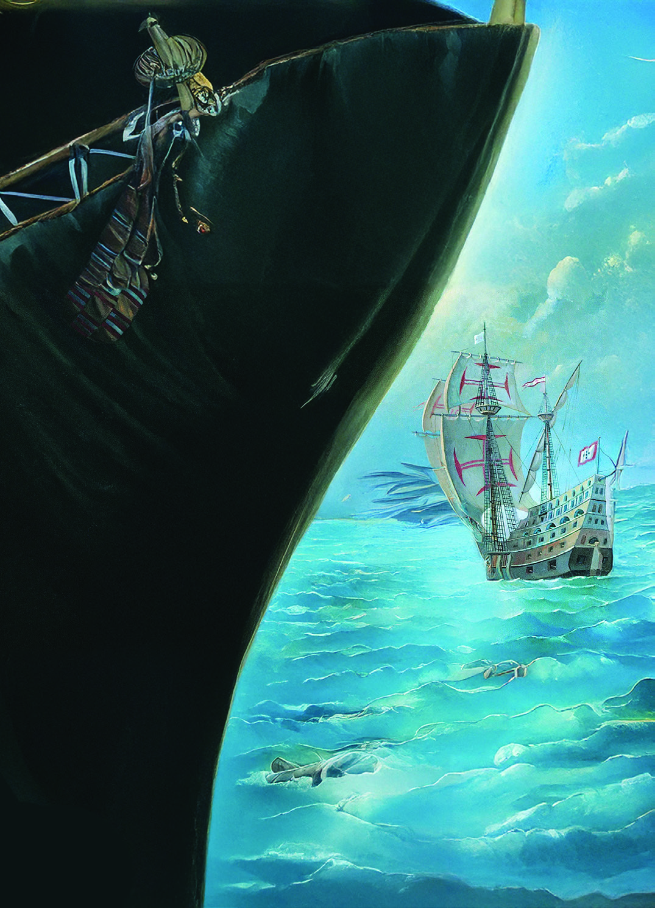
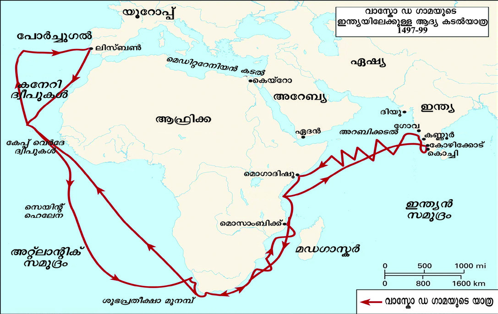
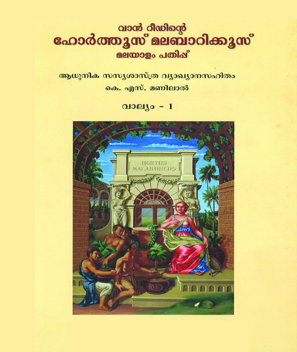
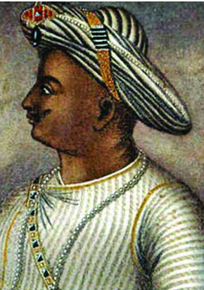
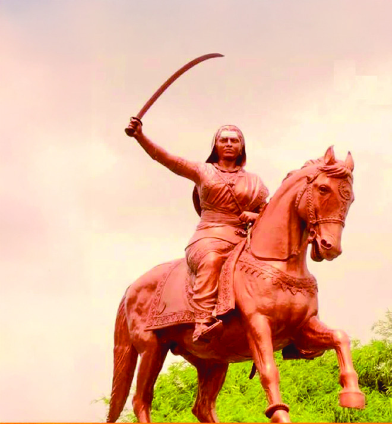
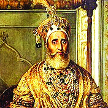

സാാമൂൂഹ്യയശാാസ്ത്രംം
ഭാഗം - 1
സ്റ്റാാൻഡേർഡ് VIII
കേuരളസർക്കാാർ
പൊൊതുുവിിദ്യാæാഭ്യാæാസവകുുപ്പ്്
തയ്യാാറാാക്കിിയത്
സംസ്ഥാാന വിിദ്യാ�ാഭ്യാ�ാസ ഗവേ�ഷണ പരിിശീലന സമിിതി (SCERT) കേേsരളംം
2025
Page 1

Page 2

ദേ�ശീീയഗാനം
ജനഗണമന അധിിനായക ജയഹേ�
ഭാാരതഭാാഗ്യവിിധാതാ,
പഞ്ചാാബസിന്ധുു ഗുജറാാത്ത മറാാഠാാ
ദ്രാാവിിഡ ഉത്ക്കല ബംഗാ,
വിിന്ധ്യഹിമാചല യമുനാഗംഗാ,
ഉച്ഛല ജലധിിതരംഗാ,
തവശുുഭനാാമേ� ജാഗേ�,
തവശുുഭ ആശിഷ മാഗേ�,
ഗാഹേ� തവ ജയഗാഥാാ
ജനഗണമംഗലദാായക ജയഹേ�
ഭാാരതഭാാഗ്യവിിധാതാ
ജയഹേ�, ജയഹേ�, ജയഹേ�,
ജയ ജയ ജയ ജയഹേ�!
Prepared by
State Council of Educational Research and Training (SCERT)
Poojappura, Thiruvananthapuram 695012, Kerala
Website : www.scertkerala.gov.in, e-mail : scertkerala@gmail.com
Typeset and design by : SCERT
First Edition - 2025
Printed at : KBPS, Kakkanad, Kochi-30
© Department of General Education, Government of Kerala
സാാമൂൂഹ്യയശാാസ്ത്രംം
പ്രതിജ്ഞ
ഇന്ത്യയ എൻ്റെź രാജ്യമാണ്. എല്ലാാ ഇന്ത്യയക്കാരും�ം എൻ്റെź സഹോ�ോദരീ
ീ
സഹോ�ോദര
ന്മാാരാണ്.
ഞാാന് എൻ്റെź രാജ്യത്തെ� സ്നേേǜഹിക്കുന്നുു; സമ്പൂൂർണ്ണവുംം� വൈൈവിിധ്യ
പൂർണ്ണവുമായ അതിൻ്റെź പാരമ്പര്യയത്തില് ഞാാന് അഭിമാനം കൊsൊള്ളുുന്നുു.
ഞാാന് എൻ്റെź മാതാപിതാക്കളെ�യുംം�
ഗുരുക്കന്മാാരെെയുംം�
മുതിര്ന്നവരെെയുംം�
ബഹുമാനിക്കുംം�.
ഞാാന് എൻ്റെź രാജ്യത്തിൻ്റെźയുംം� എൻ്റെź നാട്ടുുകാരുടെെയുംം� ക്ഷേേäമത്തിനുംം�
ഐശ്വര്യത്തിനുംം� വേ�ണ്ടിി പ്രയത്നിിക്കുംം�.
8
Page 3


പ്രിിയപ്പെƀട്ട കൂൂട്ടുകാരേ,
സാാമൂൂഹ്യയശാാസ്ത്രപഠനത്തിിലൂൂടെെ വിിശാാലമാായ ലോ�ോകത്തെ�
ക്കുുറിിച്ചുംംc വൈൈവിിധ്യയപൂർണ്ണമായ സാാമൂൂഹിക
ജീീവിിതത്തെ�പ്പറ്റിിയുംംc മുൻക്ലാാസുകളിിൽ നിന്നുംംc ഒട്ടേ�റെെ കാര്യങ്ങൾ നാം മനസ്സിിലാക്കിയിട്ടുണ്ട്്.
സമൂൂഹത്തിിന്റെെź ചരിത്രവുംംc പരിവർത്തനവുംംc കൂൂടുതലായി മനസ്സിിലാക്കാനുള്ള അവസര
ങ്ങൾ
ഇവിിടെെ ലഭിിക്കുംംc. മാതൃരാജ്യത്തിിന്റെെź തുടിക്കുുന്ന ഭൂതകാലത്തെ�
ക്കുുറിിച്ചുുള്ള നവീനമായ അറിിവുകൾ
നമ്മുുടെെ ചരിത്രബോോധത്തിിൽ പുതിയ വെ�ളിിച്ചംം പകർന്നുു തരുന്നവയാ
ാണ്്.
യൂറോ�ോപ്യൻ രാജ്യങ്ങൾ ഇന്ത്യയയുടെെ മേ�ൽ നൂറ്റാണ്ടുകളോ�ോളംം
നടത്തിിയ അധിനിവേ�ശങ്ങളും�ം സ്വദേേശി
സംംസ്കാാരത്തിിന് നേ�രെെയുുണ്ടായ അടിച്ചമർത്തലുുകളും�ം ഇവിിടെെ ഓർമ്മപ്പെƀടുത്തുന്നുുണ്ട്്. അടിമത്വ
ത്തിിൽ നിന്നുംംc കോ�ോളനിിവാഴ്്ചയിൽ നിന്നുംംc മോ�ോചിിതരാകുന്നതിിന് നമ്മുുടെെ പൂർവിികരാായ ധീരദേേശാാഭിി
മാനികൾ നടത്തിിയ ത്യാാ�ഗോuോജ്വലമാായ സ്വാാ�തന്ത്ര്യയസമര
ത്തിിന്റെെź ചരിത്രമറിിയാനുതകുന്ന പാഠഭാഗങ്ങൾ
ഈ പാഠപുസ്തകത്തിിൽ ഉൾപ്പെƀടുത്തുന്നുു.
ഭൂമിയുടെെ ചലനസവിിശേ�ഷതകളാായ ഭ്രമണ
-പരിക്രമണ
ങ്ങളുടെെ വിിശദാം�ശങ്ങളും�ം അവയ്ക്ക്് ജീീവിിതത്തിി
ലുള്ള സ്വാാ�ധീനവുംംc ചർച്ചയ്ക്ക്് വിിധേ�യമാകുന്നുുണ്ട്്. മനുുഷ്യന്റെെź അനന്തമാായ ആവശ്യങ്ങളെ� പരിമിത
മായ വിിഭവങ്ങൾ ഉപയോ�ോഗിച്ച് പരിഹരിിക്കുുന്നതുുൾപ്പെƀടെെയുള്ള അടിസ്ഥാാന സാാമ്പത്തിിക വിിഷയ
ങ്ങൾ ഈ പാഠപുസ്തകത്തിിന്റെെź ഉള്ളടക്കമാാകുന്നുുണ്ട്്.
നമ്മുുടെെ ഭരണ
ഘടന മുന്നോ�ോട്ടുുവയ്ക്കുന്ന നിയമങ്ങൾ, കടമക
ൾ, അവകാാശങ്ങൾ എന്നിവ വിിശദ
മാക്കി സ്വാാ�തന്ത്ര്യയവുംംc സമത്വവവുംംc സാാഹോ�ോദര്യയവുംംc ഉയർത്തിിപ്പിടിക്കുുന്ന മൂൂല്യബോോധമുുള്ള പൗരരായി
നിങ്ങളെ� മാറ്റാൻ ഈ പാഠപുസ്തകംം ഒരു വഴിികാട്ടിയാകുംംc.
മാധ്യയമരംംഗംം നമ്മുുടെെ സമൂൂഹത്തെ�
എപ്രകാാരംം സ്വാാ�ധീനിക്കുുന്നുു എന്ന കാര്യം�ം സമീീപകാലത്തെ�
സുപ്ര
ധാന സംംഭവങ്ങളുടെെ പശ്ചാാത്തലത്തിിൽ വിിശദീീകരിിക്കുുന്നുുണ്ട്്. മാധ്യയമങ്ങളും�ം സമൂൂഹവുംംc തമ്മിലുള്ള
ബന്ധത്തെ�ക്കുുറിിച്ചറിിയാനുള്ള ശേ�ഷിി ആർജിക്കാനുതകുന്ന തരത്തിിലാണ്് ഈ പാഠപുസ്തകംം രൂപപ്പെƀ
ടുത്തിിയിരിക്കുുന്നത്്.
ദേേശീയബോോധംം വർധിപ്പിക്കുുവാനുംംc സ്വയംം മനസ്സിിലാക്കുുവാനുംംc സമൂൂഹത്തെ�
തിരിച്ചറിിഞ്ഞ്് പുതിയ
കാഴ്്ചപ്പാടുകൾ രൂപീകരിിക്കുുവാനുംംc സാാമൂൂഹ്യയശാാസ്ത്രപഠനംം സഹാ
ായിക്കുംംc. ലോ�ോകത്തിിൻ്റെെź ഗതിവിിഗ
തികൾ തിരിച്ചറിിഞ്ഞ്് സജീീവപൗൗരരാകാൻ കഴിിയുന്ന തരത്തിിൽ മികച്ച പഠനാനുഭവങ്ങളുടെെ അടി
സ്ഥാാനത്തിിൽ ആസൂത്രണംം ചെ�യ്തിിട്ടുള്ള എട്ടാം� ക്ലാാസിലെ� സാാമൂൂഹ്യയശാാസ്ത്ര പാഠപുസ്തകംം ഭാഗംം 1,
ചരിത്രത്തെ� ആവേ�ശപൂൂർവംം സമീീപിക്കാനുംംc പുത്തൻ അറിിവുകൾ നേ�ടാനുംംc സഹാ
ായകമാാകുംംc എന്ന്
ഉറപ്പുനൽകുന്നുു.
സ്നേേǜഹത്തോ�ോടെെ
െ,
ഡോോ. ജയപ്രകാശ് ആർ.കെെs.
ഡയറക്ടർ
എസ്.സി.ഇ.ആർ.ടി., കേ�രളംം
Page 4


പാഠപുസ്തകരചനാസമിിതി
അക്കാദമിിക് കോ�ോഡിിനേ�റ്റർ
ഡോോ. കെെs.എൻ. ഗണേ�ഷ്
ചെ�യർമാൻ, കേ�രള കൗൺസിൽ ഫോോർ
ഹിസ്റ്റോǢോറിിക്കൽ റിിസർച്ച്
ഡോോ. വിി. ഷഹർബാൻ
അസോ�ോസിിയേ�റ്റ്് പ്രൊ�ൊഫസ
ർ & ഹെ�ഡ്
്,
ഡിപ്പാർട്ടുമെെന്റ്് ഓഫ് ഇക്കണോ�ോമി
ിക്സ്,
കണ്ണൂർ സർവകലാാശാാല
ഡോോ. അനിൽ ഡി.
റിിസർച്ച് ഓഫിസർ, എസ്.സി.ഇ.ആർ.ടി., കേ�രളംം
ഡോോ. അഞ്ജന വിി.ആർ. ചന്ദ്രൻ
റിിസർച്ച് ഓഫീസർ, എസ്.സി.ഇ.ആർ.ടി. കേ�രളംം
ഡോോ. അഖിിൽ എസ്.
എച്ച്.എസ്.എസ്.ടി. ജ്യോ�ോ�ഗ്രഫി, ജി.എച്ച്.എസ്.എസ്.
താഴത്തുവടകര
, കോ�ോട്ടയംം
അഷ്റഫ്് എം.
പ്രിിസിപ്പാൾ (റിിട്ട), ജി.ജി.എച്ച്.എസ്.എസ്.,
അടൂർ, പത്തനംംതി
ിട്ട
വിി. കൃപലാജ്
എച്ച്.എസ്.ടി. സോ�ോഷ്യൽ സയൻസ്, വിി.എംം.എച്ച്.എസ്.എസ്.
വടവന്നൂർ, പാലക്കാട്
ലീന പി.എസ്.
എച്ച്.എസ്.ടി. സോ�ോഷ്യൽ സയൻസ്, എസ്.എൻ.എച്ച്.
എസ്.എസ്. ഉഴമലയ്ക്കൽ, നെ�ടുുമങ്ങാട്, തിരുവനന്തപുുരംം
ഡോോ. പ്രിയങ്ക പി.യു.
എച്ച്.എസ്.ടി. സോ�ോഷ്യൽ സയൻസ്, ജി.എച്ച്.എസ്.എസ്.
നെ�യ്യാാർഡാം, തിരുവനന്തപുുരംം
പ്രദീപ്കുമാർ എൽ.
എച്ച്.എസ്.എസ്.ടി. പൊ�ൊ
ളിിറ്റിിക്കൽസയൻസ്, ജി.വിി.എച്ച്.
എസ്.എസ്. പട്ടാഴി, കൊ�ൊ
ല്ലംം
പി.സി. രാധാകൃഷ്ണൻ
എച്ച്.എസ്.എസ്.ടി. സോ�ോഷ്യോ�ോ�ളജിി, ജി.എച്ച്.എസ്.എസ്.
മുന്നൂർക്കോ�ോട്്, പാലക്കാട്
രഞ്ജിത് വെ�ള്ളല്ലൂൂർ
എച്ച്.എസ്.ടി. സോ�ോഷ്യൽ സയൻസ്, ജി.എച്ച്.എസ്.എസ്.
കിളിിമാനൂർ, തിരുവനന്തപുുരംം
റിജുകുമാർ കെെs.സി.
എച്ച്.എസ്.എസ്.ടി. ഹിസ്റ്റിി, ജി.എച്ച്.എസ്.എസ്.
അവിിടനല്ലൂർ, കോ�ോഴിിക്കോ�ോട്്
ഷറീന കെെs.
എച്ച്.എസ്.ടി. സോ�ോഷ്യൽ സയൻസ്, ജി.എച്ച്.എസ്.എസ്.
പെ�രി
ിന്തൽമണ്ണ, മലപ്പുറംം
ശ്രീീജിത്ത് എം. മൂൂത്തേ�ടത്ത്
എച്ച്.എസ്.ടി. സോ�ോഷ്യൽ സയൻസ്, സി.എൻ.എൻ.ജി.എച്ച്.
എസ്. ചേ�ർപ്പ്, തൃശ്ശൂൂർ
ഡോോ. ഉഷാ റാാണി കെെs.
അസിസ്റ്റൻ്റ് പ്രൊ�ൊഫസ
ർ, ഗവ: കോ�ോളേ�ജ്് ഓഫ് ടീച്ചർ
എഡ്യൂൂ�ക്കേ�ഷൻ, തിരുവനന്തപുുരംം
ഡോോ. അനീഷ് വിി.ആർ.
അസിസ്റ്റന്റ് പ്രൊ�ൊഫസ
ർ,
ഡിപ്പാർട്ട്മെെന്റ്് ഓഫ് പൊ�ൊ
ളിിറ്റിിക്കൽ
സയൻസ്, എസ്.എ.ആർ.ബി.ടി.എംം.
ഗവ: കോ�ോളേ�ജ്്, കൊ�ൊയി
ിലാണ്ടി
ബിനോ�ോ പി. ജോ�ോസ്്
അസിസ്റ്റന്റ് പ്രൊ�ൊഫസ
ർ,
ഡിപ്പാർട്ട്മെെന്റ്് ഓഫ് ഹിസ്റ്റിി,
സെ�ന്റ്് ഡൊ�ൊമിിനിക്സ് കോ�ോളേ�ജ്്,
കാഞ്ഞിരപ്പള്ളി
ഡോോ. ജയരാജൻ കെെs.
അസോ�ോസിിയേ�റ്റ്് പ്രൊ�ൊഫസ
ർ & ഹെ�ഡ്
്
ഡിപ്പാർട്ട്മെെന്റ്് ഓഫ് ജ്യോ�ോ�ഗ്രഫി,
ഗവ: കോ�ോളേ�ജ്്, ചിറ്റൂർ, പാലക്കാട്
ചെ�യർപേ�ഴ്്സൺ
അവൈൈസർ
വിിദഗ്്ധർ
അംഗങ്ങൾ
സംസ്ഥാാന വിിദ്യാ�ാഭ്യാ�ാസ ഗവേ�ഷണ പരിിശീലന സമിിതി (SCERT)
വിിദ്യാ�ാഭവൻ, പൂജപ്പുര, തിരുവനന്തപുുരംം 695 012
Page 5


അധിനിവേ�ശവുംംc
ചെ�റുുത്തുനിൽപ്പുംംc
ദേേശീയ പ്രസ്ഥാാനത്തിിന്റെെź
ആവിിർഭാവത്തിിലേ�ക്ക്്
ഭൂമിയുടെെ ചലനങ്ങൾ:
ഭ്രമണവുംംc പരിക്രമണവുംംc
അടിസ്ഥാാന സാാമ്പത്തിിക പ്രശ്നങ്ങളും�ം
സമ്പദ്വ്യയവസ്ഥയുംംc
ഇന്ത്യയൻ ഭരണ
ഘടന:
അവകാാശങ്ങളും�ം കർത്തവ്യയങ്ങളും�ം
വിിഭവ വിിനിയോ�ോഗവുംംc
സുസ്ഥിരതയുംംc
മാധ്യയമങ്ങളും�ം സാാമൂൂഹിക
പ്രതിിഫലനങ്ങളും�ം
അധിികവാായനയ്ക്ക്് - വിിലയിരുത്തലിന്
വിിധേ�യമാക്കേ�ണ്ടതിില്ല
പഠന പ്രവർത്തനം
നമുക്ക് വായിക്കാം
തുടർപ്രവർത്തനങ്ങൾ
ഈ പുസ്തകത്തിൽ പഠനസൗകര്യത്തിനായി
ചില ചിഹ്നങ്ങൾ ഉപയോ�ോഗിച്ചിിരിിക്കുന്നുു
1.
2.
3.
4.
5
6.
7.
7-26
27-42
43-58
59-72
73-86
87-102
103-118
Page 6


ഭാാരതത്തിൻ്റെź ഭരണഘടന
ആമുഖം
ഭാാരതത്തിലെ� ജനങ്ങളായ നാം ഭാരതത്തെ� ഒരു
1[പരമാാധിികാര സ്ഥിതിസമത്വവ മതേ�തര ജനാധിിപത്യ
റിപ്പബ്ലിിക്കായി] സംംവിിധാനംം ചെ�യ്യുുവാനുംംc അതിലെ�
പൗരന്മാാർക്കെ�ല്ലാം�:
സാാമൂൂഹ്യയവുംംc സാാമ്പത്തിികവുംംc രാഷ്ട്രീീയവുംംc ആയ നീതിയുംം�;
ചിന്തയ്ക്കുംംc
ആശയപ്രകട
നത്തിിനുംംc
വിിശ്വാാ�സത്തിിനുംംc
മതനിഷ്ഠയ്ക്കുംംc ആരാധനയ്ക്കുംംc ഉള്ള സ്വാാ�തന്ത്ര്യയവുംം�;
പദവിിയിലുംംc അവസര
ത്തിിലുംംc സമത്വവവുംം�;
സംംപ്രാപ്തമാക്കുുവാനുംംc;
അവർക്കെ�ല്ലാാമിടയിൽ
വ്യക്തിിയുടെെ അന്തസ്സുംംc
2[രാഷ്ട്രത്തിിൻ്റെെź ഐക്യവുംംc
അഖണ്ഡതയുംംc] ഉറപ്പുവരുുത്തിിക്കൊ�ൊണ്ട്് സാാഹോ�ോദര്യം�
ം
പുലർത്തുവാനുംംc;
സഗൗൗരവംം തീരുമാനിച്ചിരിക്കയാാൽ;
നമ്മുുടെെ ഭരണഘടനാനിർമ്മാണസഭയിിൽ ഈ 1949
നവംംബ
ർ ഇരുപത്താറാം� ദിവസംം ഇതിനാൽ ഈ ഭരണ
ഘടനയെ� സ്വീീ�കരിിക്കുകയുംം� നിയമമാാക്കുകയുംം� നമുക്കു
തന്നെ� പ്രദാാനം ചെ�യ്യുുകയുംം� ചെ�യ്യുുന്നുു.
1. 1976 - ലെ� ഭരണ
ഘടന (നാല്പത്തിിരണ്ടാം ഭേ�ദഗതിി) ആക്റ്റ്് 2-ാം� വകുുപ്പു
പ്രകാാരംം ‘‘പരമാാധികാര ജനാാധിപത്യ റിിപ്പബ്ലിിക് ’’ എന്നതിിന് പകരംം ചേ�ർ
ത്തത്് (3.1.1977 മുതൽ പ്രാബല്യം�ം).
2. മേ�ല്പറഞ്ഞ ആക്റ്റ്് 2-ാം� വകുുപ്പു പ്രകാാരംം ‘‘രാഷ്ട്രത്തിിൻ്റെെź ഐക്യംംc’’എന്നതിിനു
പകരംം ചേ�ർത്തത്് (3.1.1977 മുതൽ പ്രാബല്യം�ം).
Page 7


അധിിനിവേ�ശവുംം�
ചെ�റുുത്തുനിൽപ്പുംം�
1
യൂണിറ്റ്്
‘‘ഇംംഗ്ലീീഷ് ഈസ്റ്റ് ഇന്ത്യാാ� കമ്പനി
അതിന്റെെź ആദ്യത്തെ� കപ്പല്
വ്യൂൂ�ഹംം ഈസ്റ്റിന്ഡീസിലേ�ക്ക്്
അയയ്ക്കുന്നത്് 1601 ഏപ്രിിലില്
ആയിരുന്നുു. 18 മാസങ്ങള്ക്കുു
ശേ�ഷംം അസ്സന്ഷന്, ഡ്രാാഗണ്,
ഹെ�
ക്ടര്, സൂസന് എന്നീ നാലു
കപ്പലുകള് സുമാത്രയില് നിന്നുംംc
ജാവയിില് നിന്നുംംc കുരുമുളകുംംc
മറ്റുല്പന്നങ്ങളുമായി മടങ്ങിയെ�ത്തിി.
ഈ വിിജയത്തെ� തുടര്ന്ന്
ഇതേ� കപ്പലുകള് ലണ്ടനിില്
നിന്ന് 1604 മാര്ച്ചില് രണ്ടാം
ദൗ�ത്യമാരംംഭിിച്ചുു. മടക്കയാാത്രയില്
ഹെ�
ക്ടറും�ം സൂസനുംംc ആദ്യം�ം
പുറപ്പെƀട്ടു. പക്ഷേേä സൂസന്
കടലിില് വച്ച് തകര്ന്നുു. പിന്നാലെ�
വന്ന അസ്സന്ഷനുംംc ഡ്രാാഗണുംംc
ഹെ�
ക്ടറിിനെ� രക്ഷിയ്ക്കുമ്പോ�ോഴേ�യ്ക്കുംംc
കടലിില് ഉഴറിി നടക്കുുകയാായിരുന്ന
ആ കപ്പലിലെ� മിക്ക നാവിികരും�ം
മരണ
പ്പെƀട്ടിരുന്നുു. 1606 മേ�യ്്
മാസത്തിിൽ കുരുമുളകുംംc ഗ്രാമ്പുവുംംc
ജാതിയ്ക്കയുംം
c നിറച്ച കപ്പലുകള്
ഇംംഗ്ലണ്ടിലെ�ത്തിി. കമ്പനിയുടെെ
ലാഭംം മുടക്കുുമുതലിന്റെെź 95
ശതമാനമായിരുന്നുു’’.
James Fulcher,
Capitalism : A Very Short Introduction
Page 8


ഇന്ത്യയയുൾപ്പെƀടെെയുള്ള കിഴക്കൻ പ്രദേേശങ്ങളിിലേ�ക്ക്് (ഈസ്റ്റ് ഇൻഡീസ്)
വ്യാാ�പാരബന്ധത്തിിനായി ഇംംഗ്ലണ്ടിൽ സ്ഥാാപിച്ച് പിൽക്കാലത്ത് ഇന്ത്യയ
അടക്കിിഭരിിച്ച, ഇംംഗ്ലീീഷ് ഈസ്റ്റ് ഇന്ത്യാാ� കമ്പനിയുടെെ ആദ്യ വ്യാാ�പാര
പരിശ്രമങ്ങളുടെെ വിിവരണംം വായിച്ചല്ലോ�ോ
?
ഇത്രയുംംc ബുദ്ധിിമുട്ടേ�റിിയ വ്യാാ�പാരത്തിിന് ഇംംഗ്ലീീഷ് ഈസ്റ്റ് ഇന്ത്യാാ�
കമ്പനിയെ� പ്രേ�രിിപ്പിച്ചതെ�ന്തെ�ന്ന്
് നമുക്ക് പരിശോ�ോധിിക്കാം
.
പ്രാചീനകാലംം മുതല് യൂറോ�ോപ്യര്ക്ക് ലോ�ോകത്തിിന്റെെź ഇതരഭാാഗങ്ങളുമായി
വ്യാാ�പാരബന്ധമുണ്ടായിരുന്നുു. ഇതില് ഏഷ്യയുംംc ഉള്പ്പെƀട്ടിരുന്നുു. ഈ
ബന്ധങ്ങള് പതിനഞ്ചാംം നൂറ്റാണ്ടിന്റെെź അവസാാനത്തോ�ോടെെെ യൂറോ�ോപ്പില്
നിന്ന് കിഴക്കുു ദിശയിിലേ�ക്കുുള്ള ഒരു സമുുദ്രപാത കണ്ടെ�ത്തു
ുന്നതിിലേ�ക്ക്്
നയിച്ചുു. ഇതിനു കാരണമാായ പ്രധാാനഘടകങ്ങൾ താഴെെപ്പറയുുന്നവയാ
ാണ്്.
l യൂറോ�ോപ്യര് കപ്പല് നിര്മ്മാണത്തിിലുംംc, കപ്പൽയാത്രയിലുംംc
കൈൈവരിിച്ച സാാങ്കേേÿതികപുുരോോഗതി
l ഭൂൂമിശാാസ്ത്ര പരിജ്ഞാാനത്തിിലുണ്ടായ വളര്ച്ച
l ദിശ കണ്ടെ�ത്താ
ാൻ സഹാ
ായിക്കുുന്ന കോ�ോമ്പസ്,
ഭൂപടനിര്മ്മാണംം എന്നിവയിിലുണ്ടായ പുരോോഗതി
l പുതിയ പ്രദേേശങ്ങളെ�യുംംc അവിിടത്തെ� സമ്പത്തിിനെ�യുംംc
കുറിിച്ച് സഞ്ചാരികളുുടെെ യാത്രാവിിവരണ
ങ്ങൾ പകർന്ന
അറിിവ്
l യൂറോ�ോപ്പില് കുരുമുളകടക്കമുുള്ള ഏഷ്യന്
ഉൽപന്നങ്ങള്ക്കുുണ്ടായിരുന്ന കച്ചവട
സാാധ്യയത
l തുര്ക്കികള് കോ�ോണ്സ്റ്റാന്റിനോ�ോപ്പിള് പിടിച്ചടക്കി
ിയത്
പോ�ോർച്ചുുഗീസുകാരായിരുന്നുു കടൽമാർഗംം ഇന്ത്യയയിലെ�
ത്തിിച്ചേ�ർന്ന ആദ്യ യൂറോ�ോപ്യർ. വാസ്കോ�ോ ഡ ഗാമയാാണ്് കടല്
മാര്ഗംം ഇന്ത്യയയിലെ�ത്തിിയ ആദ്യ പോ�ോര്ച്ചുുഗീസുകാരൻ.
യൂൂറോോപ്പിിനുംംc ഏഷ്യയയ്ക്കുംംc
ഇടയിലുുള്ള ഒരുു പ്രധാാന
കേsന്ദ്രമാായിിരുുന്നുു
കോോsോണ്സ്റ്റാാന്റിിനോ�ോപ്പിിള്.
ഇതുുവഴിിയാാണ്് യൂൂറോോപ്പുംc
ഏഷ്യയയുംc തമ്മിില് കരമാാർഗംം
വ്യാാ�പാാരബന്ധത്തിിൽ
ഏർപ്പെ�ട്ടിിരുുന്നത്്. 1453ല്
തുുര്ക്കിികള് ഇവിടംം
പിടിച്ചടക്കുുകയുംംc
ഇതുുവഴിിയുുള്ള യൂൂറോോപ്യരുുടെെ
വ്യാാ�പാാരംം തടയുുകയുംc ചെെxയ്തുു.
തുുടർന്ന് പുുതിയ പാാത
കണ്ടെെĬത്തുുന്നതിിന് യൂൂറോോപ്യർ
നിർബന്ധിതരാായിി.
ചിത്രംം 1.1 l വാാസ്കോോǘോ ഡ ഗാാമയുുടെെ ഇന്ത്യയയിലേ�ക്കുുള്ള യാാത്ര
കോsോണ്സ്റ്റാാന്റിിനോോോപ്പിിള്
8
Page 9


പോ�ോർച്ചുഗീസുകാരുടെെ ഇന്ത്യയയിലേ�ക്കുുള്ള യാത്ര
ഭൂൂപടംം നിരീക്ഷിിച്ച് ചുുവടെെ പറയുുന്നവ കണ്ടെെĬത്തുുക
.
l വാാസ്കോോǘോ ഡ ഗാാമയുുടെെ കപ്പല് യാാത്ര ആരംംഭിച്ച സ്ഥലംം
l വാാസ്കോോǘോ ഡ ഗാാമ എത്തിിച്ചേ�ര്ന്ന സ്ഥലംം
l വാാസ്കോോǘോ ഡ ഗാാമ പിന്നിട്ട സമുുദ്രങ്ങളും�ം വന്കരകളും�ം
1498-ൽ കോ�ോഴിിക്കോ�ോടിിന് സമീീപമുള്ള കാപ്പാട് എന്ന സ്ഥലത്താ
ാണ്്
വാസ്കോ�ോ ഡ ഗാമ എത്തിിച്ചേ�ർന്നത്്. അദ്ദേേŔഹത്തിിന്റെെź വരവ്് ഇന്ത്യയയിലെ�
യൂറോ�ോപ്യന് ആധിപത്യത്തിിന് വഴിി തുറന്നു. അക്കാലത്ത് കോ�ോഴിിക്കോ�ോട്്
ഭരിിച്ചിരുന്നത്് സാാമൂൂതിരി രാജവംംശമാായിരുന്നുു. അറബി
ികളാായിരുന്നുു
കോ�ോഴിിക്കോ�ോടുുമായുള്ള വിിദേേശവ്യാാ�പാരംം നിയന്ത്രിച്ചിരുന്നത്്. അവരെെ
പുറത്താക്കി പോ�ോര്ച്ചുുഗീസുകാര്ക്ക് വ്യാാ�പാരാനുമതിി നല്കണമെെന്നു
ുള്ള
ഗാമയു
ുടെെ ആവശ്യംംc സാാമൂൂതിരി അംംഗീകരിിച്ചില്ല. ഇതേ�ത്തുുടര്ന്ന്
ഗാമ കണ്ണൂരിലെ� കോ�ോലത്തിിരി രാജാവിില് നിന്ന് വ്യാാ�പാരാനുമതിി
നേ�ടിയെ�ടുുത്തു. കുരുമുളകുുള്പ്പെƀടെെയുള്ള ഉൽപന്നങ്ങള് ശേ�ഖരിച്ച്
അദ്ദേേŔഹംം പോ�ോര്ച്ചുുഗലിിലേ�ക്ക്് മടങ്ങി. തന്റെെź യാത്രയ്ക്ക്് ചെ�ലവാായ
തുകയുുടെെ അറുപത് ഇരട്ടിയിലധിികംം മൂൂല്യമുള്ള ചരക്കുുകളുുമായാണ്്
ഗാമ ഇന്ത്യയയിൽ നിന്ന് മടങ്ങിയത്.
ഗാമയു
ുടെെ യാത്രയിലൂൂടെെ ഉണ്ടായ ലാഭംം ഇന്ത്യയയിലേ�ക്ക്് വീണ്ടുംംc
കച്ചവട
യാത്രകള് നടത്തുുവാന് പോ�ോര്ച്ചുുഗീസുകാരെെ പ്രേ�രിിപ്പിച്ചുു.
സാാമൂൂതിരി പോ�ോര്ച്ചുുഗീസുകാര്ക്ക് വ്യാാ�പാരക്കുുത്തക നൽകിയില്ല.
തന്മൂലംം സാാമൂൂതിരിക്കുംംc പോ�ോർച്ചുുഗീസുകാർക്കുുമിടയിൽ സംംഘര്ഷങ്ങള്
ഉടലെ�ടുുത്തു. പോ�ോര്ച്ചുുഗീസുകാര്ക്ക് ശക്തമാായ എതിര്പ്പ് നേ�രിടേ�ണ്ടിി
വന്നത്് സാാമൂൂതിരിയുടെെ നാവിികത്തലവ
ന്മാാരായിരുന്ന കുഞ്ഞാലി
മരയ്ക്കാര്മാരില് നിന്നായിരുന്നുു. കുഞ്ഞാലി മരയ്ക്കാര്മാരുടെെ കാലശേ�ഷംം
പോ�ോര്ച്ചുുഗീസുകാര്ക്ക് ഇന്ത്യയയില് നിന്ന് കാര്യമായ ഭീഷണിയുണ്ടായില്ല.
സാാവോ�ോ ഗബ്രിിയേ�ല്,
സാാവോ�ോ റാാഫേല്,
ബെ�റിിയോ�ോ എന്നീ
മൂന്ന് കപ്പലുുകളിിലാാണ്്
ഗാാമയുംc സംംഘവുംc
ഇന്ത്യയയിൽ
എത്തിിച്ചേ�ര്ന്നത്്.
ഗാാമയുുടെെ
കപ്പലുുകള്
പോ�ോര്ച്ചുുഗീീസുുകാാരുുടെെ ആക്രമണ
ങ്ങളെ� ചെെxറുുത്ത് സാാമൂതിരിയെ�യുംംc പശ്ചിിമ
തീരപ്രദേശങ്ങളെ�യുംംc സംംരക്ഷിിച്ചിരുുന്നത്് കുുഞ്ഞാാലിി മരയ്ക്കാാർമാാരാാണ്്. കുുഞ്ഞാാലിി
മരയ്ക്കാാർ എന്നത്് ഒരുു സ്ഥാാനപ്പേ�രാായി
ിരുുന്നുു. നാാലുുപേ�രാാണ്് വ്യത്യസ്തകാാലങ്ങളിൽ
ഈ സ്ഥാാനംം അലങ്കരിച്ചിരുുന്നത്്. പോ�ോർച്ചുുഗീീസുുകാാരെെ പരാാജയപ്പെ�ടുുത്തിി ചാാലിയംം
കോോsോട്ട പിടിച്ചെ�ടുുത്തത്് കുുഞ്ഞാാലിി മൂന്നാാമനാായി
ിരുുന്നുു. കുുഞ്ഞാാലിി നാാലാാമനെ�
പോ�ോര്ച്ചുുഗീീസുുകാാര് ഗോ�ോവയില് വച്ച് വധിച്ചുു. കുുഞ്ഞാാലിിമാാരുുടെെ പതനത്തോ�
ോടെെ
സാാമൂതിരിയുുടെെ അധഃപതനവുംംc ആരംംഭിച്ചുു.
കുഞ്ഞാാലിി മരയ്ക്കാാര്
9
അധിിനിിവേശവുംc
ചെxറുുത്തുുനിിൽപ്പുംംc
Page 10


ചിത്രങ്ങൾ 1.2 l വിവിധതരംം
വസ്തുുക്കൾ
ചിത്രംം 1.3 l മാാനുുവൽ കോോsോട്ടയുുടെെ
ഒരുു ഭാാഗംം
ചിത്രത്തിിൽ തന്നിട്ടുള്ളവയുുടെെ മലയാാളംം പേ�രുകൾ കണ്ടെ�
ത്തിി പട്ടികപ്പെƀ
ടുത്തുക.
പോ�ോര്ച്ചുഗീസുകാരുടെെ വരവ്് ഇന്ത്യയയില് സൃഷ്ടിിച്ച ഫലങ്ങള്
ഇന്ത്യയയുംംc പോ�ോര്ച്ചുുഗീസുകാരു
മായുള്ള ബന്ധത്തിിന്റെെź സ്വാാ�ധീന
ഫലമാായി പോ�ോർച്ചുുഗീസ് ഭാഷ
യിൽ നിന്നാണ്് ഈ പദങ്ങൾ
മലയാാളഭാാഷയ്ക്ക്് ലഭിിച്ചത്്.
l കശുുമാവ് (പറങ്കിമാവ്), പപ്പായ,
പേ�രയ്ക്ക, പൈൈനാപ്പിൾ തുട
ങ്ങിയവ പരിചയപ്പെƀടുത്തിി.
l മേ�ശ
l
l
l
l
l
10
Page 11

പോ�ോര്ച്ചുുഗീീസ് ബന്ധംം ഇന്ത്യയയില് വ്യത്യസ്ത മേ�ഖലകളിില് ചെെxലുുത്തിിയ സ്വാ�ധീീനംം
കണ്ടെെĬത്തിി പട്ടിിക പൂർത്തിിയാാക്കുുക.
രാഷ്ട്രീീയമേ�ഖല
കാര്ഷികമേ�ഖല
വിിജ്ഞാാനമേ�ഖല
സാംസ്കാാരികമേ�ഖല
ഡച്ചുുകാര്
പോ�ോര്ച്ചുുഗീസുകാരെെ തുടര്ന്ന് ഇന്ത്യയയിലേ�ക്ക്് എത്തിിച്ചേ�ര്ന്ന യൂറോ�ോപ്യർ
ഹോ�ോളണ്ടിിൽ (നെ�തർലാൻഡ്സ്) നിന്നുുള്ളവരാായിരുന്നുു. ഡച്ചുുകാർ
എന്നാണ്് ഇവർ അറിിയപ്പെƀട്ടിരുന്നത്്. നാഗപട്ടണംം, ബറോ�ോച്ച്്, അഹമ്മദാാ
ബാദ്, ചിൻസുര എന്നിവയാായിരുന്നുു ഡച്ചുുകാരുടെെ ഇന്ത്യയയിലെ� പ്രധാാന
വാണിജ്യകേ�ന്ദ്രങ്ങള്. കച്ചവടാ
ാധിപത്യത്തിിനായുള്ള മത്സരത്തിില്
ഡച്ചുുകാര് പോ�ോര്ച്ചുുഗീസുകാരെെ പരാജയപ്പെƀടുത്തിി.
കുളച്ചൽ യുദ്ധംം (Battle of Colachel)
1741ല് കന്യാാ�കുമാരിക്കടുുത്തുള്ള കുളച്ചലിിൽ വച്ച് തിരുവിിതാംകൂൂര്
ഭരണാ
ാധികാരിയായിരുന്ന മാര്ത്താണ്ഡവര്മ്മയുംം
c ഡച്ചുുകാരും�ം തമ്മില്
ഏറ്റുമുട്ടി. ഈ യുദ്ധത്തിിൽ പരാജയപ്പെƀട്ടതോ�ോടെെ ഡച്ചുുകാര്ക്ക് ഇന്ത്യയയിലെ�
ആധിപത്യംംc നഷ്ടപ്പെƀട്ടു. ഒരു യൂറോ�ോപ്യന് ശക്തിി ഇന്ത്യയന് ഭരണാ
ാധികാരിയോ�ോട്
പരാജയപ്പെƀട്ട ആദ്യത്തെ� യുദ്ധമാായിരുന്നുു ഇത്.
l ഇന്ത്യയയിലെ� ആദ്യത്തെ� യൂറോ�ോപ്യന് കോ�ോട്ട (മാനുവല്കോ�ോട്ട)
കൊ�ൊച്ചിിയിൽ സ്ഥാാപിച്ചുു.
l കൊ�ൊച്ചിി, ഗോuോവ, ദാമന്, ദിയു എന്നീ പ്രദേേശങ്ങള് പോ�ോര്ച്ചുുഗീസ്
ആധിപത്യത്തിിൻ കീഴിലായി.
l അച്ചടിിവിിദ്യ പ്രചരിപ്പിച്ചുു.
l ചവിിട്ടുനാടകംം, മാർഗംംകളിി തുടങ്ങിയ കലാാരൂപങ്ങൾ
പ്രചരിപ്പിച്ചുു.
l യൂറോ�ോപ്യൻ ശൈൈലിിയിലുള്ള കെ�ട്ടിിടനിര്മ്മാണംം ആരംംഭിിച്ചുു.
l യൂറോ�ോപ്യൻ പടക്കോ�ോപ്പുകളും�ം യുദ്ധമുുറകളും�ം അഭ്യസിപ്പിച്ചുു.
l ക്രൈൈസ്തവ മതപഠന കേ�ന്ദ്രങ്ങള് ആരംംഭിിച്ചുു.
ചിത്രംം 1.4 l കുുളച്ചൽ
യുുദ്ധസ്മാാരകംം
11
അധിിനിിവേശവുംc
ചെxറുുത്തുുനിിൽപ്പുംംc
Page 12



ചിത്രംം 1.5 l ഹോോോര്ത്തൂസ്
മലബാാറിിക്കൂസിന്റെ� കവർ ചിത്രംം
ഹോോോര്ത്തൂസ് മലബാാറിിക്കൂസിലെ�
ഒരുു ചിത്രമാാണിിത്. ഏത് സസ്യമാാണിിതെ�ന്ന്്
തിരിച്ചറിയുുക.
l
ചിത്രംം 1.6 l ഹോോോർത്തൂസ് മലബാാറിിക്കൂസിലെ� ഒരുു പേ�ജ്്
ഇട്ടിി അച്ചുുതൻ
ഇട്ടിി അച്ചുുതൻ
ആലപ്പുുഴ ജില്ലയിലെ� ചേxർത്തല താാലൂക്കിിലെ� കടക്കരപ്പള്ളി
ി ഗ്രാാമത്തിിൽ
ഒരുു പാാരമ്പര്യ വൈൈദ്യകുുടും�ംബത്തിിൽ ജനിച്ച പ്രഗല്്ഭനാായ
നാാട്ടുുവൈൈദ്യനാായിിരുുന്നുു
ഇട്ടിി അച്ചുുത
ൻ.
ഫ്രഞ്ചുകാർ
ഡച്ചുുകാര്ക്ക് ശേ�ഷംം ബ്രിിട്ടീഷുകാരും�ം (ഇംംഗ്ലീീഷുകാർ) പിന്നീട് ഫ്രഞ്ചുകാരും�ം
കച്ചവട
ത്തിിനായി ഇന്ത്യയയിലെ�ത്തിിച്ചേ�ര്ന്നുു. ദക്ഷിണേ�ന്ത്യയയിൽ ആധിപ
ത്യത്തിിനായി ബ്രിിട്ടീഷുകാരും�ം ഫ്രഞ്ചുകാരും�ം തമ്മിൽ നടന്ന യുദ്ധ
ങ്ങളായിരുന്നുു കർണ്ണാട്ടിക് യുദ്ധങ്ങൾ. ഈ യുദ്ധത്തിിൽ ബ്രിിട്ടീഷുകാ
ർക്കായിരുന്നുു അന്തിമവിിജയംം. തൽഫലമാായി ഫ്രഞ്ചുകാരുടെെ ആധിപത്യംംc
പോ�ോണ്ടിിച്ചേ�രിി (പുതുച്ചേ�രിി), യാനംം, കാരയ്ക്കല്, മാഹി എന്നീ പ്രദേേശങ്ങളിില്
മാത്രമായി ചുരുങ്ങി.
ഹോ�ോര്ത്തൂസ് മലബാറിക്കൂസ്
ഡച്ചുുകാരുമായുള്ള ബന്ധത്തിിന്റെെź ഏറ്റവുംം
c വലിിയ സംംഭാവന
‘ഹോ�ോര്ത്തൂസ് മലബാ
ാറിിക്കൂസ്’ എന്ന കൃതിയാണ്്. കേ�രളത്തിിലെ�
742 ഔഷധ സസ്യങ്ങളെ�ക്കുുറിിച്ചുുള്ള വിിവരങ്ങൾ ഈ ഗ്രന്ഥത്തിിൽ
പ്രതിിപാദിച്ചിട്ടുണ്ട്്. ഡച്ച് ഗവര്ണറാായിരുന്ന ഹെ�
ൻട്രിിക്
വാന്റീഡാണ്് (Hendrik-van Rheed) ഈ കൃതിയുടെെ രചനയ്ക്ക്്
നേ�തൃത്വംംc നൽകിയത്. ഈ രചനയ്ക്ക്് അദ്ദേേŔഹത്തെ�
സഹാ
ായിച്ചത്്
ഇട്ടി അച്ചുുതന് എന്ന മലയാാളിി വൈൈദ്യനായിരുന്നുു. അപ്പുഭട്ട്,
രംംഗഭട്ട്, വിിനായക ഭട്ട് എന്നിവരും�ം രചനയില് പങ്കാളിികളാായി.
മലയാാള അക്ഷരങ്ങൾ അച്ചടിിയിൽ പതിഞ്ഞ ആദ്യത്തെ� പുസ്തകംം
ഹോ�ോര്ത്തൂസ് മലബാ
ാറിിക്കൂസ് ആണ്്. മലയാാളംം, ഇംംഗ്ലീീഷ് എന്നീ
ഭാഷകളിിലേ�ക്ക്് ഈ കൃതി വിിവർത്തനംം
ചെ�യ്തത്് ഡോ�ോ. കെ�.എസ്.
മണി
ിലാൽ ആണ്്.
12
Page 13


ഇന്ത്യയയിൽ
ഫ്രഞ്ചുുകാാരും�ം
ബ്രിിട്ടീഷുുകാാരും�ം
തമ്മിിലുുണ്ടാായ
യുുദ്ധങ്ങള്
കര്ണ്ണാാട്ടിിക്
യുുദ്ധങ്ങള്
എന്നറിിയപ്പെ�ടുുന്നുു.
ഇന്നത്തെ�
തമിിഴ്നാാടിിന്റെ�
ഭൂൂരിപക്ഷപ്രദേശങ്ങളും�ം
ആന്ധ്രാാപ്രദേശിന്റെ�
തെ�ക്ക
ൻ
തീരപ്രദേശങ്ങളും�ം
ഉൾപ്പെ�ടുുന്ന
മേ�ഖലയാാണ്്
കർണ്ണാാട്ടിിക്.
മൂന്ന് കര്ണ്ണാാട്ടിിക്
യുുദ്ധങ്ങളാാണ്്
നടന്നത്.
കര്ണ്ണാാട്ടിിക്
യുുദ്ധങ്ങള്
തന്നിട്ടുുള്ള ഭൂൂപടംം നിരീക്ഷിിച്ച് പോ�ോര്ച്ചുുഗീീസുുകാാര്,
ഡച്ചുുകാാര്, ഫ്രഞ്ചുുകാാര് എന്നിവരുുടെെ അധീനതയി
ിലാാ
യിരുുന്ന പ്രധാാന കേsന്ദ്രങ്ങള് കണ്ടെെĬത്തൂ.
പോ�ോര്ച്ചുഗീസ്
അധിിനിവേ�ശ പ്രദേ�ശങ്ങള്
ഡച്ച്് അധിിനിവേ�ശ
പ്രദേ�ശങ്ങള്
ഫ്രഞ്ച് അധിിനിവേ�ശ
പ്രദേ�ശങ്ങള്
l കൊ�ൊച്ചിി
l നാഗപട്ടണംം
l പോ�ോണ്ടിിച്ചേ�രിി
l
l
l
l
l
l
l
l
l
കച്ചവടത്തിില് നിന്ന് അധിികാരത്തിലേ�ക്ക്്
ഇംംഗ്ലീീഷ് ഈസ്റ്റ് ഇന്ത്യാാ� കമ്പനിയെ�ക്കുുറിിച്ച് നമ്മൾ ഈ പാഠത്തിിന്റെെź
ആരംംഭത്തിിൽ ചർച്ച ചെ�യ്തല്ലോ�ോ? ഏഷ്യയുമായുള്ള വ്യാാ�പാരബന്ധത്തിിന്
ബ്രിിട്ടീഷുകാര് 1600-ലാണ്് ഇംംഗ്ലീീഷ് ഈസ്റ്റ് ഇന്ത്യാാ� കമ്പനി സ്ഥാാപി
ചിത്രംം 1.7 l
Map not to scale
13
അധിിനിിവേശവുംc
ചെxറുുത്തുുനിിൽപ്പുംംc
Page 14


“എനിക്ക് രണ്ടാായിരംം പട്ടാാളക്കാാരെെ
അയച്ചുുതരിിക.
ഞാാന് ഇന്ത്യയയെ� പിടിച്ചടക്കാം”.
-റോോബര്ട്ട് ക്ലൈൈവ്
ഇംംഗ്ലീീഷ് ഈസ്റ്റ് ഇന്ത്യാാ� കമ്പനിയുടെെ സൈൈനിികത്തലവനാ
ായിരുന്ന
റോ�ോബ
ര്ട്ട് ക്ലൈൈവിിന്റെെź വാക്കുുകൾ നിങ്ങള് വായിച്ചല്ലോ�ോ
. എന്തു
കൊ�ൊണ്ടാായിരിക്കുംംc അദ്ദേേŔഹംം ഇപ്രകാാരംം അഭിിപ്രായപ്പെƀട്ടത്?
l ഇന്ത്യയന് നാട്ടുരാജ്യങ്ങള്ക്കിടയിലെ� അനൈൈക്യംംc
l ബ്രിിട്ടീഷുകാരുടെെ മെെച്ചപ്പെƀട്ട സൈൈനിിക, സാാങ്കേേÿതികവിിദ്യ
l
l 1639ല് മദ്രാാസ്
തുുറമുുഖത്തിിന്റെ�
ചുുങ്കവരുുമാാനത്തിിന്റെ�
പകുുതി നല്കണമെെന്ന
ഉപാാധിിയോ�ോടെെ പ്രാാദേശിക
രാാജാാവാായ ദമർലാാ
വെ�ങ്കടാാന്ദ്രിനാായക
ദീര്ഘകാാലത്തേ�ക്ക്്
മദ്രാാസ് തുുറമുുഖംം
ബ്രിിട്ടീഷുുകാാര്ക്ക് നല്കി.
l 1662ല് പോ�ോര്ച്ചുുഗീീസ്
രാാജകുുമാാരിിയാായ
കാാതറിനെ� വിവാാഹംം
ചെെxയ്തപ്പോ�ോൾ ബ്രിിട്ടീഷ്്
രാാജാാവ് ചാാള്സ് രണ്ടാാമന്
ഉപഹാാരമാായിി ലഭിിച്ച
പ്രദേശമാാണ്് ബോം�ംബെ�
.
പിന്നീട് ഈ പ്രദേശംം
ഇംംഗ്ലീീഷ്് ഈസ്റ്റ് ഇന്ത്യാാ�
കമ്പനിക്ക് കൈൈമാാറി.
l 1698ല് സുുതനതിി,
കാാലികട്ട, ഗോ�ോവിന്ദ്്പൂര്
എന്നീ മൂന്ന് ഗ്രാാമങ്ങള്ക്ക്
ചുുറ്റും�ം ബ്രിിട്ടീഷുുകാാര്
പണി
ിത കോോsോട്ടയാാ
ണ്്
വില്യം�ംകോോsോട്ട (Fort
William). ക്രമേ�ണ
ഈ
പ്രദേശംം പട്ടണ
മാായിിമാാറി,
കല്ക്കട്ട എന്ന പേ�രിില്
അറിയപ്പെ�ട്ടുു.
ച്ചത്്. കമ്പനിയുടെെ പ്രതിിനിധി ക്യാാ�പ്റ്റന് വിില്യം�ം ഹോ�ോക്കിിന്സ്
അന്നത്തെ�
മുഗള് ചക്രവര്ത്തിി ജഹാംഗീറിിൽ നിന്ന് അനുമതിിനേ�ടി
ഗുജറാാത്തിിലെ� സൂററ്റിിൽ ഒരു കച്ചവടത്താ
ാവളംം (ഫാക്ടറിി) സ്ഥാാപിച്ചുു.
തുടർന്ന് ഇന്ത്യയയുടെെ വിിവിിധ ഭാഗങ്ങളിില് കമ്പനി ഫാക്ടറിികള്
ആരംംഭിിച്ചുു. അതിനെ�ത്തുുടര്ന്ന് മദ്രാസ് (ചെ�ന്നൈൈ), ബോംംബെെ
(മും�ംബൈൈ), കൽക്കട്ട (കൊ�ൊ
ൽക്കത്ത
) എന്നീ പ്രദേേശങ്ങളിില്
ആധിപത്യംംc നേ�ടിക്കൊ�ൊണ്ട്് കമ്പനി അവിിടങ്ങളിിലെ� ഭരണ
ത്തിില്
ഇടപെ�ടാാന് തുടങ്ങി.
ബ്രിിട്ടീഷുകാര് ഇന്ത്യയയില് രാഷ്ട്രീീയ ആധിപത്യംംc സ്ഥാാപിക്കുുന്നത്്
1757-ലെ� പ്ലാാസിയുദ്ധത്തിിലൂൂടെെയാണ്്. ബംംഗാളിിലെ� നവാബാ
യിരുന്ന സിറാജ്-ഉദ്-ദൗ�ളയെ� റോ�ോബ
ര്ട്ട് ക്ലൈൈവിിന്റെെź നേ�തൃത്വ
ത്തിിലുള്ള ഈസ്റ്റ് ഇന്ത്യാാ� കമ്പനിയുടെെ സൈൈന്യംംc ഈ
യുദ്ധത്തിിൽ പരാജയപ്പെƀടുത്തിി. ബംംഗാളിിന്റെെź ഭരണംം പിടിച്ചെ�ടുു
ത്തത്് ബ്രിിട്ടീഷുകാർക്ക് ഇന്ത്യയയിലെ� മറ്റ് പ്രദേേശങ്ങൾ
തങ്ങളുടെെ അധീനതയില് കൊ�ൊണ്ടുുവരാാന് സഹാ
ായകമാായി.
കാർഷികസ
മ്പന്നമാായ ബംംഗാളിിലെ� ഭൂനികുതികൊ�ൊ
ണ്ട്് ബ്രിിട്ടീഷു
കാർ സൈൈനിികശക്തിി മെെച്ചപ്പെƀടുത്തുകയുംംc രാജ്യത്തിിന്റെെź ബാക്കി
ഭാഗങ്ങള് കീഴടക്കാനുള്ള പണംം സ്വരൂപിക്കുുകയുംംc ചെ�യ്തുു. 1764-ൽ
ബക്്സാാര് എന്ന സ്ഥലത്തു
ുവച്ചുണ്ടായ യുദ്ധത്തോ�ോടെെ
െ ബീഹാർ,
ബംംഗാൾ, ഒറീസ്സ എന്നീ പ്രവിിശ്യകളിിലെ� നികുതിപിരിക്കാനുള്ള
അവകാാശംം കമ്പനി സ്വന്തമാാക്കി. അതോ�ോടെെ ഇന്ത്യയയിൽ ഈസ്റ്റ്
ഇന്ത്യാാ�ക
മ്പനിയുടെെ ഭരണ
സാാന്നിധ്യംംc ശക്തമാായി. മുഗള്
ഭരണാ
ാധികാരിയായിരുന്ന ഷാ ആലംം രണ്ടാാമന്, അവധിിലെ�
നവാബായിരുന്ന ഷൂജ-ഉദ്-ദൗ�ള, ബംംഗാളിിലെ� നവാബായിരുന്ന
മിര് കാസിംംc എന്നിവരുുടെെ സംംയുക്ത സൈൈന്യത്തെ�യാ
ാണ്്
ബ്രിിട്ടീഷുകാർ ഈ യുദ്ധത്തിില് പരാജയപ്പെƀടുത്തിിയത്.
മദ്രാാസ്, ബോം�ംബെ�
, കൽക്കട്ട എന്നീ പ്രദേശങ്ങളുുടെെ
ആധിപത്യംംc നേ�ടിിക്കൊ�ൊണ്ട്്, ഭരണകാാര്യയങ്ങളിൽ കമ്പനി
ഇടപെ�ടാാനി
ിടയാായ സാാഹചര്യം�ം ചർച്ച ചെെxയ്യുുക.
14
Page 15


ചിത്രംം 1.8 l ടിപ്പുുസുു
ൽത്താാൻ
ഇംംഗ്ലീീഷ്് ഈസ്റ്റ് ഇന്ത്യാാ� കമ്പനിയുുടെെ ഇന്ത്യയയിലെ� ആധിപത്യംംc സംംബന്ധിച്ച പ്രധാാന
സംംഭവങ്ങൾ ഉൾപ്പെ�ടുുത്തിി ഫ്ളോ�ോചാാര്ട്ട് തയ്യാാറാാക്കിി ക്ലാാസിൽ പ്രദര്ശിപ്പിിക്കുുക
.
കീഴടക്കിയ പ്രദേേശങ്ങളിിൽ നിന്നുംംc പരമാാവധിി സമ്പത്ത് കൈൈക്കലാാക്കുുക
യായിരുന്നുു ബ്രിിട്ടീഷുകാരുടെെ ലക്ഷ്യംംc. അതിനായി അവർ സ്വീീ�കരിച്ച
മാർഗങ്ങളാണ്് കച്ചവടംം
, നികുതി പിരിവ്, യുദ്ധങ്ങൾ തുടങ്ങിയവ.
നാട്ടുുരാജ്യങ്ങളും�ം കമ്പനിിയുംം�
ഇന്ത്യയയിലെ� നാട്ടുരാജ്യങ്ങളെ� യുദ്ധങ്ങളിിലൂൂടെെയുംംc നയതന്ത്രത്തിിലൂൂടെെ
യുമാണ്് ബ്രിിട്ടീഷുകാര് കീഴ്്പ്പെƀടുത്തിിയത്.
ദക്ഷിണേ�ന്ത്യയയിലെ� നാട്ടുരാജ്യമായിരുന്ന മൈൈസൂൂരും�ം ഇംംഗ്ലീീഷ് ഈസ്റ്റ്
ഇന്ത്യയ കമ്പനിയുംംc തമ്മില് നടന്ന യുദ്ധങ്ങളാണ്് ആംംഗ്ലോ�ോ-മൈൈസൂൂര്
യുദ്ധങ്ങള്. മൈൈസൂൂർ ഭരണാ
ാധികാരിയായിരുന്ന ഹൈൈദരാാലിയുംംc മകൻ
ടിപ്പുസുൽത്താനുമാണ്് മൈൈസൂൂർസേ�നയെ� നയിച്ചത്്. നാലുതവണ
കമ്പനി സൈൈന്യവുംംc മൈൈസൂൂര് സുല്ത്താന്മാാരും�ം തമ്മില് ഏറ്റുമുട്ടി.
1782-ൽ ഹൈൈദരാാലിയുടെെ മരണാ
ാനന്തരംം
ടിപ്പുസുൽത്താൻ മൈൈസൂൂർ
സേ�നയെ� നയിച്ചുു. 1799-ലെ� നാലാം� മൈൈസൂൂര് യുദ്ധത്തിില് കമ്പനി
സൈൈന്യംംc ടിപ്പു സുല്ത്താനെ� വധിിച്ചതോ�ോടെെ
െ മൈൈസൂൂര് ബ്രിിട്ടീഷുകാരുടെെ
അധീനതയിലായി.
ഇംംഗ്ലീീഷ് ഈസ്റ്റ് ഇന്ത്യാാ� കമ്പനിയുംംc മറാാത്ത രാജ്യവുംംc തമ്മില് നടന്നതാാണ്്
ആംംഗ്ലോ�ോ-മറാാത്ത യുദ്ധങ്ങള്. മൂൂന്നാംം ആഗ്ലോ�ോ-മറാാത്ത യുദ്ധത്തോ�ോടെെ
െ
മറാാത്ത ഉള്പ്പെƀടുന്ന പ്രദേേശങ്ങള് ബ്രിിട്ടീഷ് നിയന്ത്രണ
ത്തിിലായി.
ഇംംഗ്ലീീഷ് ഈസ്റ്റ് ഇന്ത്യാാ� കമ്പനിയുംംc സിഖുകാരും�ം തമ്മില് നടന്ന
ആംംഗ്ലോ�ോ-സിഖ് യുദ്ധങ്ങളിിലെ� സിഖുകാരുടെെ പരാജയത്തോ�ോടെെെ പഞ്ചാാബ്
ബ്രിിട്ടീഷ് അധീനതയിലായി.
ബ്രിിട്ടീഷുകാർ നടപ്പിലാക്കിിയ നികുതി നയങ്ങൾ
നികുതി
നടപ്പിലാക്കിിയ
പ്രദേ�ശങ്ങൾ
നടപ്പിലാക്കിിയ
വ്യക്തിി
സവിിശേ�ഷതകൾ
ശാാശ്വത ഭൂനികുതി
വ്യവസ്ഥ (1793)
(Permanent Land
Revenue
Settlement)
ബംംഗാൾ
ബീഹാർ
ഒറീസ
കോ�ോൺവാലീസ്
പ്രഭുു
l ഭൂൂവുടമകളാായിരുന്ന
സെ�മീീന്ദാാർമാർ ബ്രിിട്ടീഷുകാർക്ക്
വേ�ണ്ടിി ഉയർന്ന നിരക്കിിൽ
നികുതി പിരിച്ചുു
l വിിളവിിലുള്ള ഏറ്റക്കുുറച്ചിലുകൾ
പരിഗണിിക്കാതെ�
നിശ്ചിത തുക കർഷകർ
നിർബന്ധമായുംംc നികുതിയായി
നൽകണമാായിരുന്നുു
15
അധിിനിിവേശവുംc
ചെxറുുത്തുുനിിൽപ്പുംംc
Page 16
ബ്രിിട്ടീഷുകാര് നടപ്പിലാക്കിയ നികുതി സമ്പ്രദായങ്ങളുടെെ പൊ�ൊതു
ുസവിിശേ�
ഷതകള് നമുക്ക് പരിശോ�ോധിിക്കാം.
l ഉയര്ന്ന നികുതി നിരക്ക്്
l
l
l
ബ്രിിട്ടീഷുകാരുടെെ നികുതി സമ്പ്രദായത്തിിന്റെെź ഫലമാായി കൃഷിഭൂമി
നഷ്ടപ്പെƀടാതിരിക്കുുന്നതിിനുവേ�ണ്ടിി പണമിിടപാടുകാരില് (Moneylenders)
നിന്ന് പണംം കടംം വാങ്ങാന് കര്ഷകര് നിര്ബന്ധിതരായി. തന്മൂലംം കര്ഷകര്
കടക്കെ�ണി
ിയിലായി. ഇവരുുടെെ ഭൂമി പിടിച്ചെ�ടുുക്കാനുള്ള അധികാരംം
പണമിിടപാടുകാർക്കുുണ്ടായിരുന്നുു. ബ്രിിട്ടീഷുകാരുടെെ പുതിയ നിയമവ്യ
വസ്ഥയുംംc ഭൂനികുതി സമ്പ്രദായങ്ങളും�ം പണമിിടപാടുകാരെെ പ്രോ�ോത്സാാഹി
പ്പിക്കുുന്നതാായിരുന്നുു. ഭക്ഷ്യവിിളകള്ക്കുുപകരംം ബ്രിിട്ടീഷുകാര്ക്കാവശ്യമായ
നീലംം, പരുത്തിി തുടങ്ങിയ നാണ്യവിിളകള് കൃഷി ചെ�യ്യാാന് ബ്രിിട്ടീഷുകാര്
കര്ഷകരെെ നിര്ബന്ധിച്ചുു. നാണ്യവിിളകളുുടെെ വ്യാാ�പനംം ഭക്ഷ്യവിിളകള്
കുറയുുന്നതിിനുംംc ഭക്ഷ്യക്ഷാമത്തിിന് കാരണമാാവുകയുംംc ചെ�യ്തുു. കാര്ഷിക
മേ�ഖലയിില് വർധിച്ചുുവന്ന ഈ വാണിജ്യവല്ക്കരണംം
കര്ഷകരെെ ചൂഷണംം
ചെ�യ്യാാന് പണമിിടപാടുകാരെെ സഹാ
ായിച്ചുു. വിിളവെ�ടു
ുത്തു കഴിിഞ്ഞാല്
കര്ഷകര് കിട്ടുന്ന വിിലയ്ക്ക്് കാര്ഷികോ�ോൽപന്നങ്ങള് വിില്ക്കേ�ണ്ടതാായിവന്നു.
ബ്രിിട്ടീഷുകാരുടെെ നികുതിനയങ്ങള് കര്ഷകരെെ എങ്ങനെ�യെ�ല്ലാം� ബാധിച്ചുു
വെ�ന്ന്് നമുക്ക് പരിശോ�ോധിിക്കാം.
l ഉയര്ന്ന നിരക്കിിലുള്ള നികുതി അടയ്ക്കാാന് കര്ഷകര് ബുദ്ധിിമുട്ടി
l വെ�ള്ളപ്പൊƀൊക്കമോ�ോ വരള്ച്ചയോ�ോ
മൂൂലംം കൃഷിനാശംം സംംഭവിിച്ചാലുംംc
നികുതിയിളവ്് ലഭിിച്ചില്ല.
റയട്ട്വാാരി
സമ്പ്രദായംം (1820)
(Ryotwari System)
ദക്ഷിണേ�ന്ത്യയ
ഡക്കാൺ
തോ�ോമസ്് മൺറോ�ോ,
അലക്്സാാണ്ടർ റീഡ്
l കർഷകരെെ ഭൂവുടമകളാായി
പരിഗണിിച്ചുു
l ബ്രിിട്ടീഷുകാർ കർഷകരിിൽ നിന്ന്
നേ�രിട്ട് നികുതി പിരിച്ചുു
l നികുതി നൽകുന്നതിിൽ
വീഴ്്ചവരുുത്തിിയ കർഷകരുുടെെ
ഭൂമി ബ്രിിട്ടീഷുകാർ
പിടിച്ചെ�ടുുത്തു
മഹ
ൽവാരി
സമ്പ്രദായംം (1822)
(Mahalwari System)
ഉത്തരേന്ത്യയ
മധ്യേ�േന്ത്യയ
പഞ്ചാാബ്
ഹോ�ോൾട്ട് മക്കെ�
ൻസി
l ഗ്രാമത്തെ�
ഒരു യൂണിറ്റായി
കണക്കാക്കി നികുതി പിരിച്ചുു
l നികുതിയിൽ വീഴ്്ചവരുുത്തുന്ന
ഗ്രാമത്തെ�
ബ്രിിട്ടീഷ് ഇന്ത്യയയോ�ോട്
കൂൂട്ടിച്ചേ�ർത്തു
16
Page 17


l കർഷകർക്ക് കൃഷിഭൂമി നഷ്ടപ്പെƀടാതിരിക്കാന് പണമിിടപാടുകാരെെ
ആശ്രയിക്കേ�ണ്ടിിവന്നു.
l കടക്കെ�ണി
ിയിൽപ്പെƀട്ട കര്ഷകര്ക്ക് ഭൂമി നഷ്ടപ്പെƀട്ടു.
കര്ഷകരെെപ്പോƀോലെ� കൈൈത്തൊ�ൊഴി
ിലുകാരെെയുംംc ബ്രിിട്ടീഷ് നയങ്ങള്
ദുരിതത്തിിലാക്കി. ബ്രിിട്ടനില് നിന്നുുള്ള യന്ത്രനിിര്മ്മിത ഉൽപന്നങ്ങള്
ഇന്ത്യയയിലേ�ക്ക്് ഇറക്കുുമതിി ചെ�യ്യപ്പെƀട്ടു. അവയുുമായുള്ള മത്സരംംമൂൂലംം
കൈൈത്തൊ�ൊഴി
ിലുകാരുടെെ ഉൽപന്നങ്ങളായ പരുത്തിി-പട്ട്-കമ്പിളിി വസ്ത്ര
ങ്ങൾ, മൺപാത്രംം, തുകൽ, ഭക്ഷ്യഎണ്ണ തുടങ്ങിയവയുുടെെ വിിപണി
നഷ്ടപ്പെƀട്ടു. ഇത് കരകൗൗശല തൊ�ൊഴിിലില് ഏര്പ്പെƀട്ടിരുന്നവരു
ുടെെ തൊ�ൊഴിിൽ
നഷ്ടപ്പെƀടുന്നതിിന് കാരണമാായി. പലരും�ം തങ്ങളുടെെ പരമ്പരാഗത
കൈൈത്തൊ�ൊഴി
ിലുകള് ഉപേ�ക്ഷിക്കാന് നിര്ബന്ധിതരായി.
ബ്രിിട്ടീഷുുകാാരുുടെെ സാാമ്പത്തിികനയങ്ങള് കര്ഷകരെെയും
ംc കൈൈത്തൊ�ൊഴിിലുുകാാരെെയുംംc
എങ്ങനെ� ബാാധിച്ചുു എന്ന് ചര്ച്ച ചെെxയ്ത് കുുറിപ്പ് തയ്യാാറാാക്കുുക.
ചൂഷണത്തിനെ�തിിരെെയുുള്ള പോ�ോരാാട്ടങ്ങള്
ബ്രിിട്ടീഷുകാരുടെെ സാാമ്പത്തിികനയങ്ങൾ ഇന്ത്യയയിലെ� വിിവിിധ
ജനവിിഭാഗങ്ങളെ� പ്രതിികൂൂലമാായി ബാധിച്ചുു. ജനങ്ങൾ അവർക്കെ�തിിരെെ
കലാാപങ്ങൾ ആരംംഭിിച്ചുു. അത്തരത്തിിലുള്ള ചില കലാാപങ്ങൾ നമുക്ക്
പരിചയപ്പെƀടാം�.
സന്യാDzാസിമാാരും�ം പോോോരാാളിികളാായപ്പോ�ോള്
1773ലെ� ഒരുു വേ�നല്ക്കാാലംം
... ബംംഗാാളിലെ� പദചിിഹ്നംം എന്ന ഗ്രാാമംം...
മഴ പെ�യ്തപ്പോ�
ോള് ജനങ്ങള് ആശ്വവസിച്ചുു, ആഹ്ലാാദിച്ചുു. പക്ഷേ�, മഴ പെ�ട്ടെെന്നുു
നിലച്ചുു. വിള ഉണങ്ങിപ്പോ�ോയി. നാാട്ടിില് ക്ഷാാമംം
പടര്ന്നുുപിിടിച്ചുു. സര്ക്കാാര്
നികുുതി പിരിവുു നിര്ത്തിിയില്ല... നികുുതി, കുുടിശ്ശിികയടക്കംം കര്ശനമാായിി
പിരിക്കാാന് അവര് ഓടി നടന്നുു. ബംംഗാാള് ദയനീീയമാായ അവസ്ഥയിലാായി.
ജനങ്ങള് കഷ്ടപ്പെ�ട്ടുു. കന്നുുകാാലികളെ� വിറ്റുു. കൃഷിപ്പണി
ിക്കുുള്ള ആയുുധങ്ങള്
വിറ്റുു. വിത്തുുപോ�
ോലുംc കൊsൊടുുക്കേ�ണ്ടിവന്നുു. വീട്ടിിലെ� പണ്ടങ്ങളും�ം പാാത്രങ്ങളും�ം
വിറ്റുു. ചിലര്ക്കുു വീടിന്റെ� വാാതില്പോ�ോലുംc പൊ�ൊളി
ിച്ചുുവിില്ക്കേ�ണ്ടിവന്നുു.
മനുുഷ്യയര്ക്കുു വിലയിില്ലല്ലോ�ോ. അതുുകൊsൊണ്ട് മനുുഷ്യയരെെ വില്ക്കാാന് സാാധിച്ചില്ല.
ഗ്രാാമീീണര് പുുല്ലുുകളും�ം ഇലകളും�ം കിഴങ്ങുുകളും�ം പറിിച്ചെ�ടുുത്തുു തിന്നുുകയാായിി...
എലികളെ�യുംംc പൂച്ചകളെ�യുംംc നാായ്ക്കളെ�യും
ംc കൊsൊന്നുുതിിന്നുു വിശപ്പടക്കിി...
രോ�ോഗങ്ങള് പടര്ന്നുു പിടിച്ചുു. പനിിയുംc പ്ലേƃഗുംംc വസൂരിയുംc കാാറ്റുുപോ�ോലെ�
പരന്നുു. രോ�ോഗികളെ� ശുുശ്രൂൂഷിക്കാാനോ�
ോ ശവങ്ങള് മറവുു ചെെxയ്യാാനോ�
ോ
ആളില്ലാാതാായിി. വീടുുകളില് ശവശരീരങ്ങള് അനാാഥമാായിി കിടന്നുുചീഞ്ഞുു നാാറിി.
അവലംംബംം - ബങ്കിംംcചന്ദ്ര ചാാറ്റർജി : ആനന്ദമഠംം, ഡിസി ബുുക്സ്, 7-ാം� പതിിപ്പ്
17
അധിിനിിവേശവുംc
ചെxറുുത്തുുനിിൽപ്പുംംc
Page 18


ബംംഗാാളിിലുുണ്ടാായ ക്ഷാാമംം പരിിഹരിിക്കുുന്നതിിന്് ഈസ്റ്റ്് ഇന്ത്യാാ�
കമ്പനി യാതൊ�ൊരുു ശ്രമവുംം� നടത്തിിയില്ല. അതിിനാല് ദരിിദ്രരായ
കര്ഷകരും�ം തൊ�ൊഴിിലാളിികളും�ം ബ്രിിട്ടീീഷുകാര്ക്കെ�തിിരെെ പോ�ോരാാടി.
കര്ഷക കലാപത്തിിന്് സന്യാ�സിമാരുടെെ പിന്തുണയുമുണ്ടാായിരുന്നു.
അതിിനാൽ ഇവ സന്യാ�സി കലാപങ്ങള് എന്നറിിയപ്പെƀടുന്നു.
സന്യാ�സിമാരോ�ോടൊ�ൊപ്പം ഫക്കീര്മാരും�ം ബ്രിിട്ടീീഷുകാര്ക്കെ�തിിരെെ
കലാപത്തിില് അണിചേxര്ന്നു. അതുകൊ�ൊണ്ട്് ഈ കലാപത്തെ�
സന്യാ�സി-ഫക്കീര് കലാപം എന്നുംം� വിളിിക്കുുന്നു. ഭവാനി പഥക്,
മജ്്നു ഷാ എന്നിവരാായിരുന്നു സന്യാ�സി-ഫക്കീര് കലാപത്തിിന്്
നേ�തൃത്വം� നല്കിയത്.
കൃഷിിയിില് നിിന്ന്് കലാാപത്തിിലേ�ക്ക്്
ബ്രിിട്ടീീഷ് കൊ�ൊളോ�ോണിിയല് ഭരണത്തിിനെ�തിിരെെ നടന്ന ഏറ്റവുംം�
പ്രധാാനപ്പെƀട്ട കാര്ഷികകലാപമായിരുന്നു ബംംഗാാളിിലെ� നീലം
കര്ഷക കലാപം (1859). ഇതിിന്് കാരണമായ സാഹചര്യയങ്ങള്
എന്തെ�ല്ലാാമെെന്ന്് നമുുക്ക് പരിിശാാധിക്കാം.
l ബ്രിിട്ടീീഷുകാരായ തോ�ോട്ടക്കാാര് (Indigo Planters) ഗ്രാാമപ്രദേ�ശങ്ങളിില്
സ്ഥാാപിച്ചിിട്ടുള്ള ഫാക്ടറിികള്ക്കാവശ്യയമാായ അമരിിച്ചെ�ടിി കൃഷിചെxയ്യാാന്
കര്ഷകരെെ നിര്ബന്ധിിച്ചു.
l അമരിിച്ചെ�ടിിയിൽ നിന്ന് ഉല്പാദിപ്പിക്കുുന്ന നീലം ബ്രിിട്ടീീഷുകാര്ക്ക്
മാത്രമേ� വില്ക്കാന് കഴിിയുമായിരുന്നുള്ളൂ.
l നീീലത്തിിന്് കമ്പോ�ോളവിിലയേ�ക്കാള് താഴ്ന്ന വില മാത്രമാണ്
കര്ഷകര്ക്ക് ബ്രിിട്ടീീഷുകാര് നല്കിയിരുന്നത്.
l കടുത്ത ഭക്ഷ്യയക്ഷാാമത്തിിനുംം� ചൂഷണത്തിിനുംം� സാമ്പത്തിിക
ബുദ്ധിിമുട്ടുകള്ക്കുംം� ഇത് വഴിിതെ�ളിിച്ചു.
l കൃത്രിമച്ചായം കണ്ടെ�ത്തിിയതോ�ോടെെ നീലത്തിിന്റെź ആവശ്യയകത കുറ
ഞ്ഞത് ദാരിിദ്ര്യം�ം വർധിപ്പിച്ചു. മറ്റ് വഴിികളിില്ലാതെ� കര്ഷകര് ബ്രിിട്ടീീഷു
കാര്ക്കെ�തിിരെെ പ്രക്ഷോ�ോഭത്തിിന്റെź പാതയിിലേ�ക്ക്് തിിരിിഞ്ഞു.
ദിഗംബര് ബിശ്വാാ�സിന്റെźയുംം� വിഷ്ണുു ബിശ്വാാ�സിന്റെźയുംം� നേ�തൃത്വവത്തിിലാ
യിരുന്നു നീലം കലാപത്തിിന്് തുടക്കം കുറിിച്ചത്്. ബംംഗാാളിിലുുടനീളം കലാപം
പടര്ന്നു പിടിച്ചതോ�ോടെെ
കര്ഷകര് നീലം കൃഷി ഉപേ�ക്ഷിച്ചു. തുടര്ന്ന് നീലം
ഫാക്ടറിികള് ആക്രമിച്ചു. കൃഷിക്കാരുടെെ പ്രതിിരോ�ോധംം ശക്തമായപ്പോോƀോള്
1882ല് ബംംഗാാളിി ഭാാഷയിില്
ബങ്കിംം�ചന്ദ്ര ചാറ്റർജിി
രചിച്ച ആനന്ദമഠംം എന്ന
നോ�ോവലിിൽ നിന്നാണ്്
നമ്മുുടെെ ദേശീീയഗീീതമായ
വന്ദേ�മാതരം
എടുത്തിിട്ടുുള്ളത്.
ഭവാാനന്ദന് എന്ന
കഥാാപാാത്രംം ആലപിിക്കുുന്ന
ഗാാനമായാണ്്
വന്ദേ�മാതരത്തെ� നോ�ോവലിില്
പരാാമർശിക്കുുന്നത്.
വന്ദേŭമാാതരംം
ബംംഗാാളിിലെ� നീലം
കര്ഷകര്
അനുഭവിിക്കുുന്ന
ദുരിതങ്ങളെ�
ആസ്പദമാക്കി 1860-
ല് ദീനബന്ധുുമിത്ര
രചിച്ച നാടകമാണ്്
നീല്ദര്പ്പണ്.
നീീല്ദര്പ്പണ്
ബങ്കിംം�ചന്ദ്ര ചാറ്റര്ജിിയുടെെ ആനന്ദമഠംം എന്ന ബംംഗാാളിി ഭാാഷയിിൽ എഴുുതിയ
നോ�ോവലിിലെ� ഒരു ഭാാഗമാാണ്് നിങ്ങള് വായിിച്ചത്. ആനന്ദമഠംം എന്ന നോ�ോവലിിൽ
നിന്നുംം� അന്നത്തെ� ബംംഗാാളിിലെ� ജനങ്ങളുടെെ ദുരിതത്തെ�ക്കുുറിിച്ചുംം� ഇതിനിടയാാക്കിയ
സാാഹചര്യങ്ങൾ എന്തെെŦല്ലാാമെെന്നുംം� ചർച്ച ചെ�യ്യുുക.
18
Page 19

കാാടുണര്ന്നപ്പോ�ോള്
ഏറ്റവുംംc സാാഹസികമാായ ധൈൈര്യയമാാണ്് സാാന്താാളുുക
ള് പ്രകടിപ്പിിച്ചത്. എപ്പോ�ോഴാാണ്്
പിടിക്കപ്പെ�ട്ട്് ദണ്ഡനവിിധേ�യരാാകുുക എന്നറിിയില്ലെ�ങ്കിിലുംc അവര് കീഴടങ്ങാാന്
തയ്യാാറാായില്ല. ഒരിക്കല് 45 സാാന്താാളുുക
ള് ഒരുു മണ്കുുടിലില് അഭയംം തേ�ടിി ബ്രിിട്ടീഷ്്
പട്ടാാളക്കാാര്ക്കെ�തിിരെെ പോ�ോരാാടി. കുുടിലിന് നേ�രേ� തുുരുുതുുരാാ വെ�ടിിയുുണ്ടകള്
പാാഞ്ഞുു. ഓരോ�ോ തവണയുംc ശരവര്ഷംം കൊsൊണ്ട് സാാന്താാളുുക
ള് മറുുപടിി നല്കി.
അവസാാനംം വെ�ടിിനിര്ത്തിി കുുടിലില് പ്രവേ�ശിച്ച പട്ടാാളക്കാാര്ക്ക് ഒരുു വൃദ്ധനെ�
മാാത്രമാാണ്് ജീവനോ�ോടെെ കാാണാാനാായത്്. ഒരുു പട്ടാാളക്കാാര
ന് അയാാളോ�ോട് കീഴടങ്ങാാന്
ആവശ്യപ്പെ�ട്ടുു. തുുടര്ന്ന് പാാഞ്ഞടുുത്ത വൃദ്ധന് തന്റെ� മഴുു കൊsൊണ്ട് അയാാളെ�
വെ�ട്ടിിവീഴ്ത്തിി.
ബിപൻ ചന്ദ്ര - ഇന്ത്യയയുുടെെ സ്വാ�തന്ത്ര്യയസമരംം
തോ�ോട്ടക്കാര് ഫാക്ടറിികള് അടച്ചുുപൂട്ടുകയുംംc ബംംഗാളിില് നീലംം കൃഷി
ഏതാണ്ട്് ഇല്ലാതാവുകയുംംc ചെ�യ്തുു.
സാാന്താള് ഗോuോത്രജനതയുടെെ ധീരത കാണിക്കുുന്ന കുറിിപ്പാണ്് മുകളിില്
കൊ�ൊടു
ുത്തിിരിക്കുുന്നത്്. എന്തിനായിരിക്കുംംc സാാന്താള് ജനത ബ്രിിട്ടീഷു
കാര്ക്കെ�തിിരെെ പോ�ോരാടിയത്?
18-ാം� നൂറ്റാണ്ടില് ബംംഗാൾ പ്രവിിശ്യയിലെ� രാജ്മഹ
ല് കുന്നിലേ�ക്ക്്
കുടിയേ�റിിപാര്ത്ത ഗോuോത്രജനവിിഭാഗമാാണിവര്. ഭൂവുടമകള് അന്യാാ�യമായി
കരംം പിരിക്കുുകയുംംc കൊ�ൊ
ള്ളപ്പലിശക്കാര് നിരന്തരമാായി കടംം നല്കുകയുംംc
പകരമാായി അവരുുടെെ ധാന്യങ്ങളും�ം വനവിിഭവങ്ങളും�ം തട്ടിയെ�ടുുക്കുുകയുംംc
ചെ�യ്തിിരുന്നുു. ഇതെ�ല്ലാം� ബ്രിിട്ടീഷുകാരുടെെ പിന്ബലത്തോ�ോടുു കൂൂടിയായിരുന്നുു
നടന്നിിരുന്നത്്. ഭൂമിയുമായുള്ള ഗോuോത്രജനതയുടെെ ബന്ധത്തെ�ക്കുുറിിച്ച്
യാതൊ�ൊരുു ധാരണയുുമില്ലായിരുന്ന ബ്രിിട്ടീഷ് ഭരണ
കൂൂടത്തിിന് ഇതെ�ല്ലാം�
നികുതി വരുുമാനംം വർധിപ്പിക്കാനുള്ള ഉപാധികള് മാത്രമായിരുന്നുു.
തങ്ങള് നേ�രിട്ട അനീതികള്ക്കെ�തിിരെെ ഗോuോത്രജനതയെ� അണിനിരത്തിി
1855-ല് ബ്രിിട്ടീഷുകാര്ക്കെ�തിിരെെ സാാന്താളുകൾ പോ�ോരാട്ടങ്ങൾക്ക് തുടക്കംം
കുറിിച്ചുു. ഈ കലാാപങ്ങള്ക്ക് നേ�തൃത്വംംc നല്കിയ സിധോ�ോവിിനെ�യുംംc
കാൻഹുവിിനെ�യുംംc ബ്രിിട്ടീഷുകാര് വധിിച്ചുു. കലാാപംം ക്രൂരമാായി അടിച്ചമർ
ത്തപ്പെƀട്ടെെങ്കിലുംംc ഗോuോത്രജനതയുടെെ പ്രതിിരോോധ ചരിത്രത്തിിലെ� ഒരു
സുപ്രധാാന അധ്യാ�ായമായി സാാന്താള് കലാാപംം മാറിി.
ഉൽഗുലാൻ (Great Tumult)
സാാന്താള് കലാാപംം പോ�ോലെ� ഇന്ത്യയയിലെ� പല പ്രദേേശങ്ങളിിലുംംc ഗോuോത്രജനത
യുടെെ കലാാപങ്ങള് ഉണ്ടായി. 19-ാം� നൂറ്റാണ്ടിന്റെെź അവസാാന ദശകത്തിില്
19
കടൽ കടന്നെ�ത്തിിയ
ചൂഷണം
Page 20


നടന്ന ഗോ�ോത്രവർഗകലാപമാണ് ‘ഉൽഗുലാന്’. ഇത് മുണ്ട കലാപം
എന്നാണ് പൊ�ൊതുുവെ� അറിിയപ്പെƀടുന്നത്. ‘വലിിയ കോ�ോലാാഹലം’ അല്ലെ�ങ്കിില്
‘വലിിയ ഇളക്കം’ എന്നാണ് ഉൽഗുലാന് എന്ന പദത്തിിന്റെź
അര്ഥം. ഇന്നത്തെ� ജാര്ഖണ്ഡിിലെ� മുണ്ട ഗോ�ോത്രവിഭാഗങ്ങളുടെെ
ജനവാാസമേ�ഖലകളിില് ബ്രിിട്ടീീഷ് കൊ�ൊളോ�ോണിിയല് ഭരണത്തെ�
തകര്ത്ത് മുണ്ടാാരാജ്് (രാജ്യം�ം) സ്ഥാാപിക്കാന് ശ്രമിച്ച ബിര്സ
മുണ്ടയാാണ് കലാപത്തിിന്് നേ�തൃത്വം� നല്കിയത്.
ഈ കലാപത്തിിന്റെź കാരണങ്ങള് പരിിശോ�ോധിിക്കാം.
l ബ്രിിട്ടീീഷ് കൊ�ൊളോ�ോണിിയല് ചൂഷണവുംം� ഭൂമി
പിടിച്ചെ�ടുുക്കലുംം�
l പണമിടപാടുകാരുടെെയുംം� വ്യാ�പാരിികളുടെെയുംം�
സാമ്പത്തിിക ചൂഷണം
1899ല് മുണ്ട ഗോ�ോത്രവിഭാഗം ബ്രിിട്ടീീഷുകാര്ക്കെ�തിിരെെ സായുധ
കലാപം ആരംഭിച്ചു. ബ്രിിട്ടീീഷ് പോ�ോലീീസുമായി പല സ്ഥലത്തുംം�
ഏറ്റുമുട്ടലുുകള് ഉണ്ടാായി. റാഞ്ചിിയില് നടന്ന വെ�ടിിവെ�യ്പിില്
ഒട്ടേ�റെെ മുണ്ട ഗോ�ോത്രവിഭാഗക്കാര് കൊ�ൊല്ലപ്പെƀട്ടു. ബിര്സ മുണ്ട
തടവിലാകുകയുംം� അവിടെെവച്ച്് മരണപ്പെƀടുകയുംം� ചെxയ്തുു. മുണ്ട
കലാപത്തെ� ബ്രിിട്ടീീഷുകാര് ക്രൂരമാായി അടിച്ചമര്ത്തിി.
കുറിിച്യയർ കലാപം, പഹാരിിയ കലാപം, കോ�ോള് പ്രക്ഷോ�ോഭംം, ഭീല്
കലാപം, ഖാസി കലാപം തുടങ്ങിയവ ബ്രിിട്ടീീഷുകാര്ക്കെ�തിിരെെ
ഇന്ത്യയയു
ുടെെ വിവിധ ഭാഗങ്ങളിിൽ നടന്ന ചില ഗോ�ോത്രകലാപ
ങ്ങളാണ്.
പോ�ോരാാട്ടത്തിിന്റെź ഗർജനം
ബ്രിിട്ടീീഷുകാരുടെെ നയങ്ങള് തമിിഴ്നാാട്ടിലെ� സൈൈനിികത്തലവ
ന്മാാരായ
പോ�ോളിിഗര്മാരെെയുംം� ബാധിച്ചു.
തിിരുനെ�ല്വേ�ലിിയിലെ� പാഞ്ചാലം കുറിിച്ചിിയിലെ� പോ�ോളിിഗറാായിരുന്ന
വീരപാാണ്ഡ്യയ കട്ടബൊ�ൊ
മ്മനുംം� ശിവഗംംഗയിിലെ� പോ�ോളിിഗർമാരായിരുന്ന
മരുുത് പാണ്ഡ്യയസഹോ�ോദരന്മാാരും�ം ബ്രിിട്ടീീഷുകാർക്കെ�തിിരെെയുുള്ള
l ബിിര്സ മുണ്ടയുടെെ
ജന്മദിനമായ നവംബര്
15 ജന്ജാതിയ ഗൗരവ്
ദിവസ് (ഗോ�ോത്രാാഭിമാന
ദിനം) ആയിി 2021
മുതല് ഇന്ത്യയിിൽ
ആചരിക്കുുന്നു.
l ഇന്ത്യന് പാാര്ലമെെന്റിില്
ഛാായാചിത്രംം സ്ഥാാപിച്ച്
ആദരിക്കപ്പെ�ട്ടിിട്ടുുള്ള
ഏക ഗോ�ോത്രജനതയുടെെ
നേ�താവാണ്് ബിര്സ
മുണ്ട.
l ബിിര്സ മുണ്ടയെ�
കേ�ന്ദ്രകഥാാപാാത്രമാാക്കി
ഇക്ബാല് ദുറാനി
രചിച്ച കൃതിയാണ്്
ഗാാന്ധി സേ� പഹലേ�
ഗാാന്ധി.
l ബിിര്സ മുണ്ടയെ�
കേ�ന്ദ്രകഥാാപാാത്രമാാക്കി
മഹാശ്വേ�േതാദേവി രചിച്ച
കൃതിയാണ്് ആരണ്യര്
അധിികാര്
ചിത്രംം 1.9 l ബിർസ മുണ്ട
ബിിർസ മുണ്ട
പാാളയംം അഥവാാ സൈൈനിികത്താവളം എന്നർഥം വരുന്ന
പാാളയക്കാർ എന്ന തമിഴ് പദത്തിിൽ നിന്നാണ്് പോ�ോളിിഗർ
എന്ന ഇംഗ്ലീീഷ് പദംം ഉണ്ടായത്്.
പോോളിിഗർ
20
Page 21


ബ്രിിട്ടീഷുുകാാര്ക്കെ�തിിരെെ
ഇന്ത്യയയില് നടന്ന
ആദ്യത്തെ� സൈൈനിിക
കലാാപമാായിിരുുന്നുു
തമിിഴ്നാാട്ടിിലെ� വെ�ല്ലൂൂര്
കലാാപംം. ബ്രിിട്ടീഷ്്
സൈൈന്യയത്തിിലെ�
ഇന്ത്യയക്കാാരാാ
ണ്് ഈ
കലാാപത്തിിന് നേ�തൃത്വംംc
നൽകിയത്്. ഇംംഗ്ലീീഷ്്
ഈസ്റ്റ് ഇന്ത്യാാ� കമ്പനി
ഇന്ത്യയന് സൈൈനിികരുുടെെ
വേ�ഷവിിധാാനത്തിില്
വരുുത്തിിയ
മാാറ്റങ്ങളാായിിരുുന്നുു
കലാാപത്തിിന്റെ� പ്രധാാന
കാാരണംം. 1806-ല് നടന്ന
കലാാപത്തെ�
ബ്രിിട്ടീഷുുകാാര്
അടിച്ചമര്ത്തിിയെ�ങ്കിിലുംc
തുുടര്ന്നുുണ്ടാായ ബ്രിിട്ടീഷ്്
വിരുുദ്ധ പ്രക്ഷോ�ോഭങ്ങള്ക്ക്
വെ�ല്ലൂൂര് കലാാപംം
പ്രചോോxോദനമാായിി.
വെ�ല്ലൂൂർ കലാാപം
ചിത്രംം 1.11 l വെ�ല്ലൂൂർ കലാാപ സ്മാാരകംം
പോ�ോരാട്ടത്തിിൽ സുപ്രധാാന പങ്കുവഹി
ി
ച്ചവരാ
ായിരുന്നുു. ജനങ്ങളുടെെ സംംരക്ഷ
കന് എന്ന നിലയിില് ജനങ്ങളുമായി
നല്ല ബന്ധമായിരുന്നുു കട്ടബൊൊമ്മനുു
ണ്ടായിരുന്നത്്. ജനങ്ങളിില് നിന്നുുള്ള
നികുതി പിരിവുംംc പോ�ോളിിഗറുുടെെ ചുമതലയാാ
യിരുന്നുു. പാഞ്ചാാലംം കുറിിച്ചിയിലെ� ഭരണാ
ാ
ധികാരി ബ്രിിട്ടീഷുകാര്ക്ക് കീഴടങ്ങി
യെ�ങ്കിലുംംc
കട്ടബൊൊമ്മന്
അതിന്
തയ്യാാറായില്ല. നിലവിിലുള്ള നികുതി
വർധിപ്പിച്ച് ബ്രിിട്ടീഷുകാര് ജനങ്ങളെ� കൂൂടുതല് ബുദ്ധിിമുട്ടിച്ചുു.
നികുതിപിരിവിിനെ� ചോ�ോദ്യം�ം ചെ�യ്തതാായിരുന്നുു കട്ടബൊൊമ്മനെ�
ബ്രിിട്ടീഷുകാരുടെെ ശത്രുവാക്കിയത്. കട്ടബൊൊമ്മനുംംc ശിവഗംംഗയിലെ�
പോ�ോളിിഗർമാരായിരുന്ന മരുുത് പാണ്ഡ്യ സഹോ�ോദര
ന്മാാരും�ം ബ്രിിട്ടീഷു
കാര്ക്കെ�തിിരെെ പോ�ോരാടി വീരമൃത്യുു�വരിച്ചുു.
ആറ്റിങ്ങല് കലാപം
ഇന്ത്യയയില് ബ്രിിട്ടീഷുകാർക്കെ�തിിരെെ നടന്ന ആദ്യകാല
സംംഘടിത കലാാപമായിരുന്നുു 1721ലെ� ആറ്റിിങ്ങൽ കലാാപംം.
കുരുമുളക്് വ്യാാ�പാരവുുമായി ബന്ധപ്പെƀട്ടും�ം, ആഭ്യന്തരഭരണ
വിിഷയങ്ങളിിൽ ഇടപെ�ട്ടും�ം ജനങ്ങൾക്കിടയിൽ വർഗീയ
വംംശീയ വിിദ്വേേേഷംം വളർത്താൻ ശ്രമിച്ചുംംc ആറ്റിിങ്ങൽ പ്രദേേശത്ത്
അരാജകത്വംംc സൃഷ്ടിക്കാൻ ബ്രിിട്ടീഷുകാർ നിരന്തരംം ശ്രമിച്ചിരുന്നുു.
ഭരണാ
ാധികാരിയായിരുന്ന ആറ്റിിങ്ങൽ റാണിക്ക് ഓരോോ
പുതുവർഷത്തിിലുംംc പാരിതോ�ോഷികങ്ങൾ നൽകുന്ന പതിവ് 1721
ലുംംc ആവർത്തിിക്കാനായി ബ്രിിട്ടീഷുകാർ ശ്രമിച്ചുു. എന്നാൽ ഇത്
ഏതെ�ങ്കിലുംംc തരത്തിിലുള്ള അപായത്തിിന് കാരണമാാകുമെെന്ന്്
21
അധിിനിിവേശവുംc
ചെxറുുത്തുുനിിൽപ്പുംംc
Page 22


ചിത്രംം 1.13 l
കിട്ടൂര് റാാണി ചെെxന്നമ്മ
ബ്രിിട്ടീഷുുകാാർക്കെ�തിിരെെ ഇന്ത്യയയിൽ നടന്ന കലാാപങ്ങളെ� വിശകലനംം
ചെെxയ്ത് പട്ടിിക പൂർത്തിിയാാക്കുുക.
ബ്രിിട്ടീഷ്് വിരുദ്ധകലാാപങ്ങൾ
ഭയന്നതിിനാൽ ചില നാട്ടുപ്രമാാണിമാർ എതിർത്തു. നാട്ടുപ്രമാാണിമാർ
മുഖേ�നമാത്രംം പാരിതോ�ോഷികങ്ങൾ നൽകിയാൽ മതിിയെ�ന്ന അവരുുടെെ
അഭിിപ്രായത്തെ� വകവയ്ക്കാതെ� ഗിഫോോർഡിന്റെെź നേ�തൃത്വത്തിിലുള്ള
നൂറ്റിിനാല്പതോ�ോളംം ബ്രിിട്ടീഷുകാരടങ്ങുന്ന സംംഘംം ആറ്റിിങ്ങൽ റാണിക്ക്
സമ്മാനങ്ങൾ നൽകാനായി എത്തിിയതാണ്് സംംഘർഷത്തിിനിടയാക്കിയത്.
ഈ സംംഘത്തെ� വർഗ-വർണ്ണ-ജാതി-മത വ്യത്യാാ�സമില്ലാതെ� നാട്ടുകാർ
ആക്രമിച്ച് വധിിച്ചുു. മാത്രമല്ല അഞ്ചുതെ�ങ്ങിിലെ� ബ്രിിട്ടീഷ്കോ�ോട്ട വളഞ്ഞ്്
ഉപരോോധംം ഏർപ്പെƀടുത്തിി. കേ�രളത്തിിൽ ബ്രിിട്ടീഷ് അധികാരത്തിിനെ�തിിരെെ
നടന്ന ആദ്യകാല സംംഘടിത ജനകീയപ്രക്ഷോäോഭമെെന്ന
നിലയിിൽ ആറ്റിിങ്ങൽ
കലാാപംം പ്രാധാന്യമർഹിക്കുുന്നുു.
സ്ത്രീമുന്നേ�റ്റംം
ബ്രിിട്ടീഷുകാരുടെെ നയങ്ങള് ഇന്ത്യയയിലെ� ഭരണാ
ാധികാരികളെ�യുംം
c ബാധിച്ചുു.
ബ്രിിട്ടീഷുകാര്ക്കെ�തിിരെെ ആയുധമെെടു
ുത്ത് പോ�ോരാടിയ ധീരവനിിതയായിരുന്നുു
കിട്ടൂര് റാണി ചെ�ന്നമ്മ
. മറാാത്ത ഭരണ
ത്തിിന്റെെź മേ�ല്ക്കോ�ോയ്്മ അംംഗീകരിിച്ച
കര്ണ്ണാടകയിിലെ� നാട്ടുരാജ്യമായിരുന്നുു കിട്ടൂര്. മൂൂന്നാംം ആംംഗ്ലോ�ോ-മറാാത്ത
യുദ്ധത്തിില് ബ്രിിട്ടീഷുകാര് വിിജയിിച്ചതോ�ോടെെ
െ കിട്ടൂര് പ്രദേേശംം ഇംംഗ്ലീീഷ്
ഈസ്റ്റ് ഇന്ത്യാാ� കമ്പനിയുടെെ നിയന്ത്രണ
ത്തിിലായി. ശിവലിംംcഗ രുദ്രദേേശാായി
ആയിരുന്നുു കിട്ടൂരിന്റെെź ഭരണാ
ാധികാരി. അദ്ദേേŔഹത്തിിന്റെെź മരണശേ�ഷംം
വിിധവയാ
ായ ചെ�ന്നമ്മ
ഒരു ആണ്കുട്ടിയെ� ദത്തെ�ടുുക്കാന് തീരുമാനിച്ചുു.
ഇത് ഇംംഗ്ലീീഷ് ഈസ്റ്റ് ഇന്ത്യാാ� കമ്പനി തടയുകയുംംc കിട്ടൂരിനെ� ബ്രിിട്ടീഷ്
ഇന്ത്യയയോ�ോട് കൂൂട്ടിച്ചേ�ര്ക്കുുകയുംംc ചെ�യ്തുു. ഇതില് പ്രകോ�ോപി
ിതയായ
കിട്ടൂര് റാണി ചെ�ന്നമ്മ
ബ്രിിട്ടീഷുകാരുമായി യുദ്ധംം പ്രഖ്യാാ�പിച്ചുു. 1829-ല്
ബ്രിിട്ടീഷുകാരുടെെ തടവിില് കഴിിയവെ� റാണി ചെ�ന്നമ്മ
മരണ
പ്പെƀട്ടു.
സന്യാാ�സി-
ഫക്കീീർ
കലാാപംം
സാാന്താാൾ
കലാാപംം
ജനകീീയ
കലാാപംം
കാാർഷിക
കലാാപങ്ങൾ
പോ�ോളിഗർ
കലാാപംം
കിട്ടൂർ
കലാാപംം
22
Page 23

1857 ലെ� കലാാപത്തിിൽ ബ്രിിട്ടീഷുകാർക്കെ�തിിരെെ പോ�ോരാടിയ കൻവർ
സിംംcഗിന്റെെź ധീരതയെ�ക്കുുറിിച്ചുുള്ള വാക്കുുകളാാണിത്.
എന്തിനായിരിക്കാം കൻവർ സിംംcഗ് ബ്രിിട്ടീഷുകാര്ക്കെ�തിിരെെ പോ�ോരാടിയത്?
ഇംംഗ്ലീീഷ് ഈസ്റ്റ് ഇന്ത്യാാ� കമ്പനിക്കെ�തിിരെെ ഇന്ത്യയയുടെെ പല ഭാഗത്തുംംc
ഒറ്റപ്പെƀട്ട പോ�ോരാട്ടങ്ങളുണ്ടായിരുന്നുുവെ�ന്ന്് നിങ്ങൾ തിരിച്ചറിിഞ്ഞല്ലോ�ോ
.
അത്തരംം പോ�ോരാട്ടങ്ങളെ�യെ�ല്ലാം� കമ്പനി പട്ടാളംം അടിച്ചമര്ത്തിി. എന്നാല്
ബ്രിിട്ടീഷ് സാാമ്രാാജ്യത്വത്തിിനെ�തിിരായി ഇന്ത്യയയില് നടന്ന സംംഘടിത
കലാാപമായിരുന്നുു 1857-ല് ഉണ്ടായത്. അതുകൊ�ൊ
ണ്ട്് തന്നെ� ചരിത്രകാരര് ഈ
കലാാപത്തെ� ഇന്ത്യയയുടെെ ഒന്നാംം സ്വാാ�തന്ത്ര്യയസമരമാ
ായി വിിശേ�ഷിിപ്പിക്കുുന്നുു.
സാാധാരണക്കാാര്, കര്ഷകര്, കൈൈത്തൊ�ൊഴി
ിലുകാര്, നാട്ടുരാജാക്കന്മാാർ,
സൈൈനിികര്, ഭൂപ്രഭുുക്കൾ തുടങ്ങി സമൂൂഹത്തിിലെ� വിിവിിധ ജനവിിഭാഗങ്ങൾ
പങ്കെെÿടുത്ത ആദ്യത്തെ� ബ്രിിട്ടീഷ് വിിരുദ്ധ സമരമാ
ായിരുന്നുു ഇത്. വിിവിിധ
ജനവിിഭാഗങ്ങളെ� കലാാപത്തിില് പങ്കെെÿടുക്കാന് പ്രേ�രിിപ്പിച്ച ഘടകങ്ങള്
എന്തെ�ല്ലാാമായിരിക്കാം
?
ബ്രിിട്ടീഷുകാര് നടപ്പിലാക്കിയ ഭരണ
പരിഷ്കാരങ്ങള് കലാാപത്തിിന്
കാരണമാായി. ഇത്തരത്തിിലുള്ള രണ്ട്് ബ്രിിട്ടീഷ് നയങ്ങളായിരുന്നുു
സൈൈനിികസഹാ
ായ വ്യവസ്ഥയുംംc ദത്തവകാാശ നിരോോധനനിയമവുംംc.
സൈൈനിക സഹാായ വ്യയവസ്ഥ (Subsidiary Alliance Policy)
ഇന്ത്യയയിൽ ബ്രിിട്ടീഷുകാരുടെെ സാാമ്രാാജ്യവിികസ
നത്തിിനുംംc കൂൂടുതൽ
അധീശത്വംംc ഉറപ്പിക്കുുന്നതിിനുംംc വേ�ണ്ടിി ഗവര്ണര് ജനറലാായിരുന്ന വെ�ല്ല
സ്ലിിപ്രഭുു നടപ്പിലാക്കിയ പദ്ധതിിയാണ്് സൈൈനിിക സഹാ
ായ വ്യവസ്ഥ.
ഇതുപ്രകാാരംം ബ്രിിട്ടീഷുകാരുമായി സൈൈനിിക സഖ്യത്തിിലേ�ർപ്പെƀടുന്ന
നാട്ടുരാജ്യങ്ങൾ ചില വ്യവസ്ഥകൾ പാലിക്കേ�ണ്ടിിയിരുന്നുു.
l സൈൈനിിക സഹായ വ്യവസ്ഥയിിലേ�ര്പ്പെƀടുന്ന നാട്ടുരാജാവ് കമ്പനി
സൈൈന്യത്തിിന്റെെź ഒരു യൂണിറ്റ് തന്റെെź രാജ്യത്തിിനുള്ളില് സ്ഥിരമാായി
പാര്പ്പിക്കണംം
.
l കമ്പനിയുടെെ സൈൈനിികവിിഭാഗത്തിിനുള്ള എല്ലാ ചെ�ലവുംംc സഖ്യത്തിി
ലേ�ർപ്പെƀടുന്ന രാജാവ് വഹി
ിക്കണംം
.
l കമ്പനിയുടെെ അനുമതിിയില്ലാതെ� മറ്റ് യൂറോ�ോപ്യന് രാജ്യങ്ങളുമായി
സഖ്യത്തിില് ഏര്പ്പെƀടാന് പാടില്ല.
ചിത്രംം 1.14 l കൻവർ സിംംcഗ്
“കൻവറും�ം സംംഘവുംc നദീീമധ്യത്തിിലേ�ക്ക്് നീങ്ങിത്തുുടങ്ങിയപ്പോ�ോഴാാണ്് കരയിിൽ
നിന്ന് ഇംംഗ്ലീീഷ്് പട്ടാാളംം വെ�ടിിവച്ചുുതുുടങ്ങിയത്്. കൻവർ സിംംcഗിന്റെ� ഇടത് കൈൈയ്ക്ക്്
വെ�ടിിയേ�റ്റുു. കൈൈ ഒടിഞ്ഞുുതൂ
ൂങ്ങി. കൻവർ സിംംcഗ് പിന്നെ� മടിിച്ചില്ല. ആ സാാഹസികൻ
അരയിിൽ തിരുുകിയ കഠാാരയെ�ടുുത്ത്് നിഷ്് പ്രയോ�ോജനമാായ ഭുുജംം വെ�ട്ടിിക്കളഞ്ഞുു
.
ഗംംഗാാമാാതാാവിന് ഇത് ഞാാന് തര്പ്പണംം
ചെെxയ്യുുന്നുു എന്ന് പറഞ്ഞാാണ്് മുുറിച്ചെ�ടുുത്ത
അവയവഭാാഗംം നദിിയുുടെെ കയത്തിിലേ�ക്ക്് വീശിയെ�റിിഞ്ഞത്്”.
കെെs.എസ്.ഐ.സി.എൽ - ദേശീയ സ്വാ�തന്ത്ര്യയസമരചരി
ിത്രംം കുുട്ടിികൾക്ക്
ബ്രിിട്ടീഷ് സാാമ്രാാജ്യത്തെ� പിടിച്ചുകുലുക്കിിയ കൊsൊടുങ്കാറ്റ്്
23
അധിിനിിവേശവുംc
ചെxറുുത്തുുനിിൽപ്പുംംc
Page 24



l ബ്രിിട്ടീഷ് ഗവര്ണര് ജനറലുുമായി ആലോ�ോചിിക്കാതെ� ഒരു നടപടിയുംംc
സഖ്യരാജാവ് നടപ്പിലാക്കാന് പാടില്ല.
l സഖ്യരാജാവ് തന്റെെź രാജ്യത്ത് ഒരു ബ്രിിട്ടീഷ് റസി
ിഡന്റിനെ� താമസി
ിപ്പി
ക്കണംം
.
l ഈ വ്യവസ്ഥകൾ ലംംഘിക്കപ്പെƀട്ടാൽ നാട്ടുരാജ്യത്തെ� ബ്രിിട്ടീഷുകാർക്ക്
പിടിച്ചെ�ടുുക്കാം.
ദത്തവകാാശ നിരോ�ോധന നിയമം (Doctrine of Lapse)
ഒരു നാട്ടുരാജ്യത്തിിലെ� ഭരണാ
ാധികാരി പിന്തുടര്ച്ചാവകാാശികളാായി
ആണ്മക്കള് ഇല്ലാതെ� മരിിച്ചാല് മറ്റൊ�ൊരു
ു കുടും�ംബത്തിില് നിന്ന്
ഒരാൺകുട്ടിയെ� അനന്തരാാവകാാശിയായി ദത്തെ�ടുുക്കുുന്ന സമ്പ്രദായംം
നിലവിിലുണ്ടായിരുന്നുു. എന്നാല് ബ്രിിട്ടീഷ് ഗവര്ണര് ജനറലാായിരുന്ന
ഡല്ഹൗസി പ്രഭുു നടപ്പിലാക്കിയ ദത്തവകാാശ നിരോോധന നിയമപ്രകാാരംം
ദത്തെ�ടുുക്കാനുള്ള രാജാവിിന്റെെź അധികാരംം ഇല്ലാതായി. അനന്തരാാവകാാശി
ഇല്ലാതാകുന്നതോ�ോടെെ
െ ആ നാട്ടുരാജ്യം�ം ഇംംഗ്ലീീഷ് ഈസ്റ്റ് ഇന്ത്യയ കമ്പനിയുടെെ
നിയന്ത്രണ
ത്തിിലാകുംംc.
ഈ രണ്ടുു നിയമങ്ങൾ പ്രകാാരംം നിരവധിി നാട്ടുരാജ്യങ്ങളെ� ബ്രിിട്ടീഷ്
ഇന്ത്യയയോ�ോട് കൂൂട്ടിച്ചേ�ർത്തു. ദുർഭരണംം ആരോോപിച്ച് അവധ്് (ഔധ്്) എന്ന
നാട്ടുരാജ്യവുംംc ബ്രിിട്ടീഷ് ഇന്ത്യയയോ�ോട് കൂൂട്ടിച്ചേ�ര്ത്തു.
ചിത്രംം 1.15 l മംംഗൽ പാാണ്ഡെ�
ഈസ്റ്റ് ഇന്ത്യാാ� കമ്പനിയിലെ� ഇന്ത്യയന് സൈൈനിികര്ക്ക് ബ്രിിട്ടീഷുകാ
രോോടുണ്ടായിരുന്ന അസംംതൃപ്തിയായിരുന്നുു 1857 ലെ� കലാാപത്തിിന്റെെź
മറ്റൊ�ൊരു
ു കാരണംം.
ബ്രിിട്ടീഷ് പടയാളിികളുുടെെ അത്ര തന്നെ� സമർഥരായിരുന്നെ�ങ്കിിലുംംc
ഇന്ത്യയന് സൈൈനിികർക്ക് കുറഞ്ഞ വേ�തനവുംംc മോ�ോശംം ഭക്ഷണവുംംc
താമസസൗ
ൗകര്യവുമായിരുന്നുു നല്കിയിരുന്നത്്. അതൃപ്തി നിറഞ്ഞ ഈ
സാാഹചര്യത്തിിലാണ്് കമ്പനി പുതിയ തരംം എന്ഫീല്ഡ് തോ�ോക്കുുകള്
സൈൈനിികര്ക്ക് വിിതരണംം ചെ�യ്തത്്. അതിന്റെെź വെ�ടിിയുണ്ടകൾക്ക് ഗ്രീസു
പുരട്ടിയ ഒരു കടലാാസ് കവറുുണ്ടായിരുന്നുു. തോ�ോക്കിിൽ വെ�ടിിയുണ്ട നിറയ്ക്കു
ന്നതിിനു മുമ്പ് ഈ കവര് കടിിച്ചുു കീറണമാായിരുന്നുു. കവറിില് പുരട്ടിയിരുന്നത്്
പശുവിിന്റെെźയുംംc പന്നിയുടെെയുംംc കൊ�ൊഴു
ുപ്പില് നിന്ന് ഉണ്ടാക്കിയ ഒരു തരംം
ഗ്രീസ് ആയിരുന്നുു എന്ന പ്രചരണംം സൈൈനിികര്ക്കിടയിലുണ്ടായി. ഇത്
അവരുുടെെ മതവിിശ്വാാ�സത്തെ� വ്രണപ്പെƀടുത്തുന്നതാായിരുന്നുു. ഇതിനെ�തിിരെെ
ആദ്യമായി പ്രതിിഷേ�ധിിച്ചത്് ബരക്്പൂറിിലെ� സൈൈനിികനാായിരുന്ന മംംഗല്
പാണ്ഡെ�യാായിരുന്നുു. തോ�ോക്കിില് വെ�ടിിയുണ്ട നിറയ്ക്കുന്നതിിന് നിര്ബന്ധിച്ച
ചിത്രംം 1.16 l ഝാാൻസി
റാാണി ലക്ഷ്മിഭാായി
ചിത്രംം 1.17 l ബഹദൂർഷാാ II
സൈൈനിിക സഹാായ വ്യവസ്ഥ, ദത്താാവകാാശ നിരോ�ോധന
നിയമംം എന്നിവ മൂലംം ഇന്ത്യയൻ നാാട്ടുുരാാജ്യങ്ങളെ� എങ്ങനെ�
ബ്രിിട്ടീഷുുകാാർ പിടിച്ചടക്കിിയെ�ന്ന്് ചർച്ച ചെെxയ്യുുക.
24
Page 25

ബ്രിിട്ടീഷ് സൈൈനിികനെ� ആക്രമിച്ചതിിന് മംംഗല് പാണ്ഡെ�യെ� 1857
ഏപ്രിിൽ 8-ന് ബ്രിിട്ടീഷുകാര് തൂക്കിലേ�റ്റിി.
1857-ലെ� കലാാപംം ആരംംഭിിച്ചത്് ഉത്തര്പ്രദേേശിലെ� മീററ്റിിലായിരുന്നുു.
മംംഗൽ പാണ്ഡെ�യുുടെെ വധത്തെ�ത്തു
ുടർന്ന് സംംഘടിച്ച ഇന്ത്യയക്കാരായ
സൈൈനിികര് ഡല്ഹിയിലെ�ത്തിി മുഗള് ഭരണാ
ാധികാരിയായ ബഹദൂൂര്ഷാ
രണ്ടാാമനെ� ഇന്ത്യയയുടെെ ചക്രവര്ത്തിിയായി പ്രഖ്യാാ�പിച്ചുു. സൈൈനിികരെെ
കൂൂടാതെ� അധികാരംം നഷ്ടപ്പെƀട്ട നാട്ടുരാജ്യങ്ങളിിലെ� ഭരണാ
ാധികാരികളും�ം
കർഷകരും�ം മറ്റുജനവിിഭാഗങ്ങളും�ം ഉത്തരേന്ത്യയയുടെെ പലഭാാഗങ്ങളിിലുംംc
കലാാപത്തിില് പങ്കെെÿടുത്തു. മാസങ്ങൾകൊ�ൊ
ണ്ട്് ബ്രിിട്ടീഷുകാർ
എല്ലായിടത്തുംംc ലഹള
അടിച്ചമർത്തിി. നിരവധിി ഇന്ത്യയക്കാരെെ
വെ�ടിിവച്ചുകൊ�ൊന്നുു. വളരെെപ്പേേ
ƀരെെ പീരങ്കിയുണ്ടയ്ക്ക്് ഇരയാക്കി.
അനേ�കാായിരങ്ങളെ� വഴിിമരക്കൊ�ൊമ്പു
ുകളിിൽ ജീീവനോ�ോടെെ
െ തലകീീഴായി
കെ�ട്ടിിത്തൂക്കി. അവധിിൽ മാത്രംം കലാാപത്തിിൽ കൊ�ൊല്ലപ്പെƀട്ട ഒന്നരലക്ഷംം
പേ�രിൽ ഒരുലക്ഷംംപേ�ർ സാാധാരണക്കാാരായിരുന്നുു. ബ്രിിട്ടീഷുകാരുടെെ
ക്രൂരമാായ അടിച്ചമർത്തലിിനെ� ശക്തമാായി പ്രതിിരോോധിിക്കാൻ ഇന്ത്യയയിലെ�
വിിവിിധജനവിിഭാഗങ്ങളുടെെ ഐക്യത്തിിന് സാാധിച്ചുു. കലാാപംം നടക്കാാത്ത
യിടങ്ങളിിൽപ്പോƀോലുംംc സാാധാരണജനങ്ങളുടെെ പിന്തുണ കലാാപകാരിക
ൾക്കുുണ്ടായിരുന്നുു. കലാാപത്തിിന്റെെź യഥാർഥ ശക്തിി ഹിന്ദു-മുസ്ലീംംc
ഐക്യമായിരുന്നുു.
കൻവര്സിംംcഗിന്റെെź കഥ നിങ്ങള് വായിച്ചല്ലോ�ോ
? ഇതുപോ�ോലെ� ധാരാളംം
ദേേശസ്നേേǜഹികള് ബ്രിിട്ടീഷുകാര്ക്കെ�തിിരെെ പോ�ോരാടിയിട്ടുണ്ട്്. അവരിിൽ
ചിലരെെ നമുക്ക് പരിചയപ്പെƀടാം�.
ചിത്രംം 1.18 l നാാനാാ സാാഹിബ്
ചിത്രംം 1.19 l താാന്തിയാാ തോ�ോപ്പിി
ചിത്രംം 1.20 l ബീഗംം
ഹസ്രത്ത് മഹ
ൽ
കലാപം
നടന്ന സ്ഥലംം
കലാപത്തിന് നേ�തൃത്വംം�
നൽകിയവർ
സവിിശേ�ഷതകൾ
ഡൽഹി
ബഹദൂൂർഷാ രണ്ടാാമൻ
l കലാാപകാരികൾ ഇന്ത്യയയുടെെ
ചക്രവർത്തിിയായി പ്രഖ്യാാ�പിച്ചുു
l വിിപ്ലവാാനന്തരംം
ബ്രിിട്ടീഷുകാർ
റംംഗൂണിലേ�ക്ക്് നാടുകടത്തിി
ജനറൽ ഭക്ത്ഖാൻ
l ബഹദൂൂർഷാ II-ന്റെെź സൈൈനിിക ജനറൽ
ഝാാൻസി
റാണി ലക്ഷ്മിഭായി
l ഝാാൻസിയിലെ� ഭരണാ
ാധികാരി
കാൺപൂർ
നാനാ സാാഹിബ്
l മറാാത്ത ഭരണാ
ാധികാരി
താന്തിയാ തോ�ോപ്പി
l നാനാ സാാഹിബിന്റെെź സൈൈനിികത്തലവ
ൻ
l ഗറിില്ല യുദ്ധമുുറകൾ പ്രയോ�ോഗി
ിച്ചുു
ലക്്നൗൗ
ബീഗംം ഹസ്രത്ത് മഹ
ൽ
l അവധിിലെ� ഭരണാ
ാധികാരി
ബീഹാറിിലെ� ആര
കൻവർസിംംcഗ്
l ജഗദീീഷ്പൂൂറിിലെ� കർഷകപ്രഭുു
25
അധിിനിിവേശവുംc
ചെxറുുത്തുുനിിൽപ്പുംംc
Page 26


1857-ലെ� കലാാപത്തിിന് ചില പരിമിതികള് ഉണ്ടായിരുന്നുു.
l കലാാപംം ഉത്തരേന്ത്യയയിലെ� ഏതാനുംംc ഭാഗങ്ങളിില് മാത്രമായി
ഒതുങ്ങി.
l കലാാപത്തിിന് സംംഘടിത നേ�തൃത്വംംc ഉണ്ടായിരുന്നില്ല.
l കലാാപകാരികളെ�ക്കാ
ാള് മെെച്ച
പ്പെƀട്ട സൈൈനിികശേ�ഷി
ിയുംംc
സംംഘാടന മികവുംംc കമ്പനി സൈൈന്യത്തിിനുണ്ടായിരുന്നുു.
l ഇന്ത്യയയിലെ� മധ്യയവർഗംം പൊ�ൊതു
ുവെ� കലാാപത്തെ� അനുകൂൂലിച്ചില്ല.
l നാട്ടുരാജ്യങ്ങളിിലെ� ഭരണാ
ാധികാരികളിിൽ ഒരു വിിഭാഗംം കലാാപ
ത്തിില് നിന്നുംംc വിിട്ടുനിന്നുു.
1857-ലെ� കലാാപത്തെ� ബ്രിിട്ടീഷുകാർ അടിച്ചമർത്തിിയെ�ങ്കിലുംംc അത്
പിൽക്കാല ഇന്ത്യാാ�ചരിത്രത്തിിൽ ശ്രദ്ധേ�യമായ സ്വാാ�ധീനംം ചെ�ലുു
ത്തിി. അവ എന്തെ�ല്ലാാമെെന്ന്് പരിശോ�ോധിിക്കാം.
l ഇന്ത്യയയിലെ� ഇംംഗ്ലീീഷ് ഈസ്റ്റ് ഇന്ത്യാാ� കമ്പനിയുടെെ ഭരണംം
അവസാാനിച്ചുു.
l ഇന്ത്യയയുടെെ ഭരണംം ബ്രിിട്ടീഷ് രാജ്ഞിയുടെെ നേ�രിട്ടുള്ള
നിയന്ത്രണ
ത്തിിലായി.
l ഗവര്ണര് ജനറല് എന്നതിിന് പകരംം വൈൈസ്രോ�ോയിി എന്ന
പദവിി നിലവിിൽ വന്നു.
l ഇന്ത്യയയുടെെ പിൽക്കാല ദേേശീയപ്രസ്ഥാാനങ്ങൾക്ക്
പ്രചോ�ോദ
നമായി.
കച്ചവട
ത്തിിനായി വന്ന വിിദേേശികൾ ഇന്ത്യയയിൽ രാഷ്ട്രീീയാധിപത്യംംc
നേ�ടിയെ�ടുുത്തു. ഇതിനെ�തിിരെെ ഇന്ത്യയയിലെ� വിിവിിധ പ്രദേേശങ്ങളിിലെ�
ജനവിിഭാഗങ്ങൾ നടത്തിിയ ചെ�റുുത്തുനിൽപ്പുകളും�ം മുന്നേ�റ്റങ്ങളുമാണ്്
തുടർന്നുുള്ള ദേേശീയ സമര
ങ്ങൾക്ക് ഊർജംം പകർന്നത്്.
1857-ലെ�
കലാാപം :
സിനിമയുംം�
സാാഹിത്യയവുംം�
മോ�ോഹൻ സിൻഹെെയുുടെെ
1857, കേsതൻ മേ�ഹ്്ത
സംംവിധാാനംം ചെെxയ്ത മംംഗൽ
പാാണ്ഡേ�: ദ റൈൈസിംംcഗ്,
ക്രിഷ്് ജഗർലമുുടിിയുുടെെ
മണി
ികർണ്ണിക: ദ ക്യൂൂ�ൻ
ഓഫ് ഝാാൻസി എന്നീ
ചലച്ചിിത്രങ്ങൾ 1857ലെ�
കലാാപംം പശ്ചാാത്തലമാാക്കിി
നിർമ്മിിക്കപ്പെ�ട്ടവയാാണ്്.
മഹാാശ്വേ�േതാാ ദേവിയുുടെെ
ഝാാൻസി റാാണി,
മലയാാറ്റൂർ രാാമകൃഷ്ണന്റെ�
അമൃതംം തേ�ടിി എന്നീ
നോ�ോവലുുകളും�ം 1857ലെ�
കലാാപംം പശ്ചാാത്തലമാാക്കിി
രചിിക്കപ്പെ�ട്ടവയാാണ്്.
തുടർപ്രവർത്തനങ്ങൾ
l പോ�ോർച്ചുുഗീസുകാർക്ക് മുമ്പ് ഇന്ത്യയ സന്ദർശിച്ച വിിദേേശികളെ�ക്കുുറിിച്ചുുള്ള വിിവരണ
ങ്ങൾ
അവരുുടെെ യാത്രാമാർഗങ്ങൾ, യാത്രാവിിവരണ
ങ്ങൾ തുടങ്ങിയവ കണ്ടെ�
ത്തിി ഒരു പതിപ്പ്
തയ്യാാറാക്കുുക.
l ഇന്ത്യയയുടെെ വിിവിിധ ഭാഗങ്ങളിിൽ നടന്ന ബ്രിിട്ടീഷ് വിിരുദ്ധ കർഷക, ഗോuോത്ര, വനിിത
മുന്നേ�റ്റങ്ങളുടെെ വാർത്തകളും�ം
ചിത്രങ്ങളും�ം വിിവിിധ സ്രോ�ോതസ്സുകളിിൽ നിന്ന് ശേ�ഖരിച്ച് ഒരു
ലേ�ഖനംം തയ്യാാറാക്കുുക.
l 1857ലെ� കലാാപകേ�ന്ദ്രങ്ങളും�ം അതിന് നേ�തൃത്വംംc നൽകിയവരെെയുംം
c ഉൾപ്പെƀടുത്തിി ഒരു ഡിജിറ്റൽ
ആൽബംം തയ്യാാറാക്കുുക.
l ഇന്ത്യയയിൽ നടന്ന ബ്രിിട്ടീഷ് വിിരുദ്ധകലാ
ാപങ്ങളെ� അടിസ്ഥാാനമാക്കി നിർമ്മിക്കുുന്ന
ഡോ�ോക്യുു�മെെന്റിിക്ക് ഒരു തിരക്കഥ തയ്യാാറാക്കുുക.
26